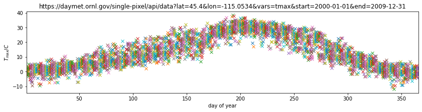

Manipulating data: numpy
While Python has a rich set of modules and data types by default, for numerical computing you'll be using two main libraries that conform the backbone of the Python scientific stack. These libraries implement a great deal of functionality related to mathematical operations and efficient computations on large data volumes. These libraries are numpy and scipy. numpy, which we will concentrate on in this section, deals with efficient arrays, similar to lists, that simplify many common processing operations. Of course, just doing calculations isn't much fun if you can't plot some results. To do this, we use the matplotlib library.
But first, we'll see the concept of functions....
2.1 Functions
A function is a collection of Python statements that do something (usually on some data). For example, you may want to convert from Fahrenheit to Centigrade. The conversion is
$$ ^{\circ}C = \left(^{\circ}F -32\right)\cdot\frac{5}{9} $$
A Python function will have a name (and we hope that the name is self-explanatory as to what the function does), and a set of input parameters. In the case above, the function would look like this:
def fahrenheit_to_centigrade(deg_fahrenheit):
"""A function to convert from degrees Fahrenheit to degrees Centigrade
Parameters
----------
deg_fahrenheit: float
Temperature in degrees F
Returns
-------
Temperature converted to degrees C
"""
deg_c = (deg_fahrenheit - 32.)*5./9.
return deg_c
We see that the function has a name (fahrenheit_to_centigrade), and takes one parameter (deg_fahrenheit).
The main body of the function is indented (like if and for statements). There is first a comment string, that describes what the function does, as well as what the inputs are, and what the output is. This is just useful documentation of the code.
The main body of the function calculates deg_C from the given input, and returns it back to the user.
Notice that the document string """A function to convert from temperature... """ is what is printed when you request help on the function:
help(fahrenheit_to_centigrade)
Help on function fahrenheit_to_centigrade in module __main__:
fahrenheit_to_centigrade(deg_fahrenheit)
A function to convert from degrees Fahrenheit to degrees Centigrade
Parameters
----------
deg_fahrenheit: float
Temperature in degrees F
Returns
-------
Temperature converted to degrees C
E2.1.1 Exercise
-
In the vein of converting units, write functions that convert from
- inches to m (and back)
- kg to stones (and back)
Hint: A stone is equal to 14 pounds, and a pound is equal to 0.45359237 kg.
Ensure that your functions are clearly named, have sensible variable names, a brief docmentation string, and remember to test the functions work: just demonstrate running the function with some input pairs where you know the output and checking it makese sense.
# Space for your solution
2.2 numpy
2.2.1 arrays
You import the numpy library using
import numpy as np
This means that all the functionality of numpy is accessed by the prefix np.: e.g. np.array. The main element of numpy is the numpy array. An array is like a list, but unlike a list, all the elements are of the same type, floating point numbers for example.
Let's see some arrays in action...
import numpy as np # Import the numpy library
# An array with 5 ones
arr = np.ones(5)
print(arr)
print(type(arr))
# An array started from a list of **integers**
arr = np.array([1, 2, 3, 4])
print(arr)
# An array started from a list of numbers, what's the difference??
arr = np.array([1., 2, 3, 4])
print(arr)
[1. 1. 1. 1. 1.]
<class 'numpy.ndarray'>
[1 2 3 4]
[1. 2. 3. 4.]
In the example above we have generated an array where all the elements are 1.0, using np.ones, and then we have been able to generate arrays from lists using the np.array function. The difference between the 2nd and 3rd examples is that in the 2nd example, all the elements of the list are integers, and in the 3rd example, one is a floating point number. numpy automatically makes the array floating point by converting the integers to floating point numbers.
What can we do with arrays? We can efficiently operate on individual elements without loops:
arr = np.ones(10)
print(2 * arr)
[2. 2. 2. 2. 2. 2. 2. 2. 2. 2.]
numpy is clever enough to figure out that the 2 multiplying the array is applied to all elements of the array, and returns an array of the same size as arr with the elements of arr multiplied by 2. We can also multiply two arrays of the same size. So let's create an array with the numbers 0 to 9 and one with the numbers 9 to 0 and do a times table:
arr1 = 9 * np.ones(10)
arr2 = np.arange(1, 11) # arange gives an array from 1 to 11, 11 not included
print(arr1)
print(arr2)
print(arr1 * arr2)
[9. 9. 9. 9. 9. 9. 9. 9. 9. 9.]
[ 1 2 3 4 5 6 7 8 9 10]
[ 9. 18. 27. 36. 45. 54. 63. 72. 81. 90.]
E2.2.1 Exercise
- Using code similar to the above and a
forloop, write the times tables for 2 to 10. The solution you're looking for should look a bit like this:[ 2 4 6 8 10 12 14 16 18 20] [ 3 6 9 12 15 18 21 24 27 30] [ 4 8 12 16 20 24 28 32 36 40] [ 5 10 15 20 25 30 35 40 45 50] [ 6 12 18 24 30 36 42 48 54 60] [ 7 14 21 28 35 42 49 56 63 70] [ 8 16 24 32 40 48 56 64 72 80] [ 9 18 27 36 45 54 63 72 81 90] [ 10 20 30 40 50 60 70 80 90 100]
# Your solution here
If the arrays are of the same shape, you can do standard operations between them element-wise:
arr1 = np.array([3, 4, 5, 6.])
arr2 = np.array([30, 40, 50, 60.])
print(arr2 - arr1)
print(arr1 * arr2)
print("Array shapes:")
print("arr1: ", arr1.shape)
print("arr2: ", arr2.shape)
[27. 36. 45. 54.]
[ 90. 160. 250. 360.]
Array shapes:
arr1: (4,)
arr2: (4,)
The numpy documenation is huge. There's an user's guide, as well as a reference to all the contents of the library. There's even a tutorial availabe if you get bored with this one.
2.2.2 More detail about numpy.arrays
So far, we have seen a 1D array, which is the equivalent to a vector. But arrays can have more dimensions: a 2D array would be equivalent to a matrix (or an image, with rows and columns), and a 3D array would be a volume split into voxels, as seen below

So a 1D array has one axis, a 2D array has 2 axes, a 3D array 3, and so on. The shape of the array provides a tuple with the number of elements along each axis. Let's see this with some generally useful array creation options:
# Create a 2D array from a list of rows. Note that the 3 rows have the same number of elements!
arr1 = np.array([[0, 1, 2, 3, 4], [5, 6, 7, 8, 9], [10, 11, 12, 13, 14]])
# A 2D array from a list of tuples.
# We're specifically asking for floating point numbers
arr2 = np.array([(1.5, 2, 3), (4, 5, 6)], dtype=np.float)
print("3*5 array:")
print(arr1)
print("2*3 array:")
print(arr2)
3*5 array:
[[ 0 1 2 3 4]
[ 5 6 7 8 9]
[10 11 12 13 14]]
2*3 array:
[[1.5 2. 3. ]
[4. 5. 6. ]]
2.2.3 Array creators
Quite often, we will want to initialise an array to be all the same number. The methods for doing this as 0,1 and unspecified in numpy are np.zeros(), np.ones(), np.empty() respectively.
# Creates a 3*4 array of 0s
arr = np.zeros((3, 4))
print("3*4 array of 0s")
print(arr)
# Creates a 2x3x4 array of int 1's
print("2*3*4 array of 1s (integers)")
arr = np.ones((2, 3, 4), dtype=np.int)
print(arr)
# Creates an empty (e.g. uninitialised) 2x3 array. Elements are random
print("2*3 empty array (contents could be anything)")
arr = np.empty((2, 3))
print(arr)
3*4 array of 0s
[[0. 0. 0. 0.]
[0. 0. 0. 0.]
[0. 0. 0. 0.]]
2*3*4 array of 1s (integers)
[[[1 1 1 1]
[1 1 1 1]
[1 1 1 1]]
[[1 1 1 1]
[1 1 1 1]
[1 1 1 1]]]
2*3 empty array (contents could be anything)
[[1.5 2. 3. ]
[4. 5. 6. ]]
Exercise E2.2.2
- write a function that does the following:
- create a 2-D tuple called
indicescontaining the integers((0, 1, 2, 3, 4),(5, 6, 7, 8, 9)) - create a 2-D numpy array called
dataof shape(5,10), data typeint, initialised with zero - set the value of
data[r,c]to be1for each of the 5 row,column pairs specified inindices. - return the data array
- create a 2-D tuple called
- print out the result returned
The result should look like:
[[0 0 0 0 0 1 0 0 0 0]
[0 0 0 0 0 0 1 0 0 0]
[0 0 0 0 0 0 0 1 0 0]
[0 0 0 0 0 0 0 0 1 0]
[0 0 0 0 0 0 0 0 0 1]]
Hint: You could use a for loop, but what does data[indices] give?
# do exercise here
Exercise 2.2.3
- write a more flexible version of you function above where
indices, the value you want to set (1above) and the desired shape ofdataare specified through function keyword arguments (e.g.indices=((0, 1, 2, 3, 4),(5, 6, 7, 8, 9)),value=1,shape=(5,10))
# do exercise here
As well as initialising arrays with the same number as above, we often also want to initialise with common data patterns. This includes simple integer ranges (start, stop, skip) in a similar fashion to slicing in the last session, or variations on this theme:
# array creators
print("1D array of numbers from 0 to 2 in increments of 0.3")
start = 0
stop = 2.0
skip = 0.3
arr = np.arange(start, stop, skip)
print(f'arr of shape {arr.shape}:\n\t{arr}')
start = 0
stop = 34
nsamp = 9
arr = np.linspace(start, stop, nsamp)
print(
f"array of shape {arr.shape} numbers equally spaced from {start} to {stop}:\n\t{arr}")
np.linspace(stop, start, 9)
1D array of numbers from 0 to 2 in increments of 0.3
arr of shape (7,):
[0. 0.3 0.6 0.9 1.2 1.5 1.8]
array of shape (9,) numbers equally spaced from 0 to 34:
[ 0. 4.25 8.5 12.75 17. 21.25 25.5 29.75 34. ]
array([34. , 29.75, 25.5 , 21.25, 17. , 12.75, 8.5 , 4.25, 0. ])
Exercise E2.2.4
- print an array of integer numbers from 100 to 1
- print an array with 9 numbers equally spaced between 100 and 1
Hint: what value of skip would be appropriate here? what about start and stop?
# do exercise here
2.2.4 Summary statistics
Below are some typical arithmetic operations that you can use on arrays. Remember that they happen elementwise (i.e. to the whole array).
b = np.arange(4)
print(f'{b}^2 = {b**2}\n')
a = np.array([20, 30, 40, 50])
print(f"assuming in radians,\n10*sin({a}) = {10 * np.sin(a)}")
print("\nSome useful numpy array methods for summary statistics...\n")
print("Find the maximum of an array: a.max(): ", a.max())
print("Find the minimum of an array: a.min(): ", a.min())
print("Find the sum of an array: a.sum(): ", a.sum())
print("Find the mean of an array: a.mean(): ", a.mean())
print("Find the standard deviation of an array: a.std(): ", a.std())
[0 1 2 3]^2 = [0 1 4 9]
assuming in radians,
10*sin([20 30 40 50]) = [ 9.12945251 -9.88031624 7.4511316 -2.62374854]
Some useful numpy array methods for summary statistics...
Find the maximum of an array: a.max(): 50
Find the minimum of an array: a.min(): 20
Find the sum of an array: a.sum(): 140
Find the mean of an array: a.mean(): 35.0
Find the standard deviation of an array: a.std(): 11.180339887498949
Let's access an interesting dataset on the frequency of satellite launches to illustrate this.

from geog0111.nsat import nsat
'''
This dataset gives the number of
satellites launched per month and year
data from https://www.n2yo.com
'''
# We use the code supplied in nsat.py
# to generate the dataset (takes time)
# or to load it if it exists
data, years = nsat().data, nsat().years
print(f'data shape {data.shape}')
print(f'some summary statistics over the period {years[0]} to {years[1]}:')
print(f'The total number of launches is {data.sum():d}')
print(f'The mean number of launches is {data.mean():.3f} per month')
data shape (12, 62)
some summary statistics over the period 1957 to 2019:
The total number of launches is 43611
The mean number of launches is 58.617 per month
Exercise E2.2.5
- copy the code above but generate a fuller set of summary statistics including the standard deviation, minimum and maximum.
# do exercise here
Whilst we have generated some interesting summary statistics on the dataset, it's not really enough to give us a good idea of the data characteristics.
To do that, we want to be able to ask somewhat more complex questions of the data, such as, which year has the most/least launches? which month do most launches happen in? which month in which year had the most launches? which years had more than 100 launches?
To be able to address these, we need some new concepts:
- methods
argmin()andargmax()that provide the index where the min/max occurs - filtering and the related method
where() axismethods: the dataset is two-dimensional, and for some questions we need to operate only over one of these
To illustrate:
from geog0111.nsat import nsat
import numpy as np
data = nsat().data
start_year, end_year = nsat().years
print("Shape of data array:", data.shape)
# sum the data over all months (axis 0)
sum_per_year = data.sum(axis=0)
# Construct an array of years
year_array = np.arange(start_year, end_year)
# Find the location (e.g. year) with **most** launches
imax = np.argmax(sum_per_year)
# Find the location (e.g. year) with **least** launches
imin = np.argmin(sum_per_year)
# filtering
# high(low) is an array set to True where the condition
# is True, and False otherwise
high = sum_per_year >= 1000 # True if more than 1000 launches
low = sum_per_year <= 300 # True if less than 300 launches
print(
f'the year with most launches was {year_array[imax]} with {sum_per_year[imax]}')
print(
f'the year with fewest launches was {year_array[imin]} with {sum_per_year[imin]}')
print('\nThe years with >= 1000 launches are:')
print(year_array[high], '\nvalues:\n', sum_per_year[high])
print('The years with <= 300 launches are:')
print(year_array[low], '\nvalues:\n', sum_per_year[low])
Shape of data array: (12, 62)
the year with most launches was 1999 with 4195
the year with fewest launches was 1957 with 3
The years with >= 1000 launches are:
[1965 1975 1976 1981 1986 1987 1993 1994 1999 2006]
values:
[1527 1195 1264 1190 1375 1130 2131 1166 4195 1158]
The years with <= 300 launches are:
[1957 1958 1959 1960 1962 1996 2002 2003 2004 2005]
values:
[ 3 11 22 52 207 246 277 243 209 192]
Exercise E2.2.6
- copy the code above, and modify it to find the total launches per month (over all years)
- show these data in a table
- which month do launches mostly take place in? which month do launches most seldom take place in?
# do exercise here
The form of filtering above (high = sum_per_year >= 1000) produces a numpy array of the same shape as that operated on (sum_per_year here) of bool data type. It has entries of True where the condition is met, and False where it is not met.
from geog0111.nsat import nsat
# sum the data over all months (axis 0)
sum_per_year = nsat().data.sum(axis=0)
high = sum_per_year >= 1000
low = sum_per_year <= 300
print(f'type(sum_per_year): {type(sum_per_year)}, sum_per_year.shape: {sum_per_year.shape}, '
+ f'sum_per_year.dtype: {sum_per_year.dtype}')
print(
f'type(high): {type(high)}, high.shape: {high.shape}, high.dtype: {high.dtype}\n')
print(f'sum_per_year: {sum_per_year}')
print(f'high: {high}')
print(f'low: {low}')
type(sum_per_year): <class 'numpy.ndarray'>, sum_per_year.shape: (62,), sum_per_year.dtype: int64
type(high): <class 'numpy.ndarray'>, high.shape: (62,), high.dtype: bool
sum_per_year: [ 3 11 22 52 396 207 346 401 1527 786 466 690 641 906
636 654 875 694 1195 1264 891 783 857 637 1190 946 884 760
788 1375 1130 814 950 691 691 740 2131 1166 534 246 960 651
4195 730 582 277 243 209 192 1158 349 406 378 373 315 435
352 355 335 308 512 320]
high: [False False False False False False False False True False False False
False False False False False False True True False False False False
True False False False False True True False False False False False
True True False False False False True False False False False False
False True False False False False False False False False False False
False False]
low: [ True True True True False True False False False False False False
False False False False False False False False False False False False
False False False False False False False False False False False False
False False False True False False False False False True True True
True False False False False False False False False False False False
False False]
We can think of this logical array as a 'data mask' that we use to select (filter) entries.
The figure shows log(sum_per_year) in the top line of the image (numbers represented by colour shown in colourbar), then a representation of the bool arrays high and low. Where the bool value is shown yellow, the 'data mask' is true.

print(f'{sum_per_year[high]}')
print(f'{sum_per_year[low]}')
[1527 1195 1264 1190 1375 1130 2131 1166 4195 1158]
[ 3 11 22 52 207 246 277 243 209 192]
Sometimes, instead of just applying the filter as above, we want to know the indices of the filtered values.
To do this, we can use the np.where() method. This takes a bool array as its argument (such as our data masks or other conditions) and returns a tuple of the indices where this is set True.
from geog0111.nsat import nsat
data = nsat().data
# where :
# which months in the dataset were particularly busy ..
# we select data > 400 as a condition
indices = np.where(data > 400)
# indices is a 2-element tuple with the locations of months
# with more than 400 launches
print(f'indices:\n{indices[0]}\n{indices[1]}')
print(f'\ntype(indices): {type(indices)}')
print(f'len(indices): {len(indices)}, len(indices[0]): {len(indices[0])}')
print(f'type(indices[0][0]): {type(indices[0][0])}')
start_year, end_year = nsat().years
year_list = np.arange(start_year, end_year)
month = np.arange(12)
# Number of months where there are more than 400 launches
n_high_launches_months = len(indices[0])
# loop over the entries in the tuple
print('*'*23)
print('busy months')
print('*'*23)
for i in range(n_high_launches_months):
# Calculate and store data for each month
month_location = month[indices[0][i]]
year_location = year_list[indices[1][i]]
launches = data[indices[0][i], indices[1][i]]
print(f"{i:04} month {month_location:02d} year " +
f"{year_location:d} ({launches:d})")
print('*'*23)
indices:
[1 3 4 4 5 5 5 6 8 8 9 9]
[29 13 37 42 24 36 49 19 40 43 8 42]
type(indices): <class 'tuple'>
len(indices): 2, len(indices[0]): 12
type(indices[0][0]): <class 'numpy.int64'>
***********************
busy months
***********************
0000 month 01 year 1986 (870)
0001 month 03 year 1970 (486)
0002 month 04 year 1994 (770)
0003 month 04 year 1999 (3476)
0004 month 05 year 1981 (507)
0005 month 05 year 1993 (1699)
0006 month 05 year 2006 (531)
0007 month 06 year 1976 (592)
0008 month 08 year 1997 (665)
0009 month 08 year 2000 (491)
0010 month 09 year 1965 (499)
0011 month 09 year 1999 (447)
***********************
Exercise E2.2.7
- Using code from the sections above, print out a table with the busiest launch months with an additional column stating the number of launches
Hint: this is just adding another column to the print statement in the for loop
# do exercise here
You might notice the indices in the tuple derived above using where are ordered, but the effect of this is that the months are in sequential order, rather than the years. We have
month[indices[0][i]]
year[indices[1][i]]
If we want to put the data in year order, there are several ways we could go about this. An insteresting one, following the ideas in argmax() and argmin() above is to use argsort(). This gives the indices of the sorted array, rather than the values.
So here, we can find the indices of the year-sorted array, and apply them to both month and year datasets:
# prepare data as above
from geog0111.nsat import nsat
def prepare_satellite_data(min_launches=400):
"""Prepares satellite launch data, returning
data as well as indices where more than `min_launches`
took place per month.
"""
data = nsat().data
start_year, end_year = nsat().years
indices = np.where(data > 400)
year_arr = np.arange(start_year, end_year)
month_arr = np.arange(12)
return data, indices, year_arr, month_arr
data, indices, year_arr, month_arr = prepare_satellite_data()
# store the months and years
# in their unsorted (original) form
unsorted_months = month_arr[indices[0]]
unsorted_years = year_arr[indices[1]]
print(f'years not in order: {unsorted_years}')
print(f'but months are: {unsorted_months}\n')
# get the indices to put years in order
year_order = np.argsort(indices[1])
# apply this to months and years
print(f'year order: {year_order}\n')
print(f'years in order: {unsorted_years[year_order]}')
print(f'months in year order: {unsorted_months[year_order]}')
years not in order: [1986 1970 1994 1999 1981 1993 2006 1976 1997 2000 1965 1999]
but months are: [1 3 4 4 5 5 5 6 8 8 9 9]
year order: [10 1 7 4 0 5 2 8 3 11 9 6]
years in order: [1965 1970 1976 1981 1986 1993 1994 1997 1999 1999 2000 2006]
months in year order: [9 3 6 5 1 5 4 8 4 9 8 5]
Exercise E2.2.8
- Use this example of
argsort()to redo Exercise E2.2.7, putting the data in correct year order
# do exercise here
2.2.5 Summary
In this section, you have been introduced to more detail on arrays in numpy. The big advantages of numpy are that you can easily perform array operators (such as adding two arrays together), and that numpy has a large number of useful functions for manipulating N-dimensional data in array form. This makes it particularly appropriate for raster geospatial data processing.
We have seen how to create various forms of array (e.g. np.ones(), np.arange()), how to calculate some basic statistics (min(), max() etc), and finding the array index where some pattern occurs (e.g. argmin(), argsort() or where()).
2.3 Plotting with Matplotlib
There are quite a few graphical libraries for Python, but matplotlib is probably the most famous one. It does pretty much all you need in terms of 2D plots, and simple 3D plots, and is fairly straightforward to use. Have a look at the matplotlib gallery for a fairly comprehensive list of examples of what the library can do as well as the code that was used in the examples.
Importing matplotlib
You can import matplotlib with
import matplotlib.pyplot as plt
As with numpy, it's custom to use the plt prefix to call matplotlib commands. In the notebook, you should also issue the following command just after the import
%matplotlib notebook
or
%matplotlib inline
The former command will make the plots in the notebook interactive (i.e. point-and-click-ey), and the second will just stick the plots into the notebook as PNG files.
Simple 2D plots
The most basic plots are 2D plots (e.g. x and y).
import numpy as np
from geog0111.nsat import nsat
import matplotlib.pyplot as plt
%matplotlib inline
'''
This dataset gives the number of
satellites launched per month and year
data from https://www.n2yo.com
'''
data, years = nsat().data, nsat().years
year = np.arange(years[0], years[1], dtype=np.int)
# sum the data over all months (axis 0)
sum_per_year = data.sum(axis=0)
print(f'data shape {data.shape}')
# plot x as year
# plot y as the number of satellites per year
plt.plot(year, sum_per_year, label='launches per year')
data shape (12, 62)
[<matplotlib.lines.Line2D at 0x7fcab8878310>]

Whilst this plot is fine, there are a few simple things we could do improve it.
We will go through some of the options below, but to get a taste of improved ploitting, lets use e.g.:
- reset the image shape/size
plt.figure(figsize=(13,3))
- plot the mean value (as a red dashed line) for comparison
plt.plot([year[0],year[-1]],[mean,mean],'r--',label='mean')
- limit the dataset to range of variable
yearplt.xlim(year[0],year[-1])
- put labels on the x and y axes
plt.xlabel('year')plt.ylabel('# satellite launches')
- set a title
plt.title('data from https://www.n2yo.com')
- use a legend (in conjunction with
label=usingplot)plt.legend(loc='best')
- use a log scale in the y-axis
plt.semilogy()
What you choose to do will depend on what you want to show on the graph, but the examples above are quite common.
import numpy as np
from geog0111.nsat import nsat
import matplotlib.pyplot as plt
%matplotlib inline
'''data as above'''
data, years = nsat().data, nsat().years
year = np.arange(years[0], years[1], dtype=np.int)
sum_per_year = data.sum(axis=0)
# calculate mean of sum_per_year
mean = sum_per_year.mean()
plt.figure(figsize=(13, 3))
plt.plot(year, sum_per_year, label='launches per year')
plt.plot([year[0], year[-1]], [mean, mean], 'r--', label='mean')
plt.xlim(year[0], year[-1])
plt.xlabel('year')
plt.ylabel('# satellite launches')
plt.title('data from https://www.n2yo.com')
plt.legend(loc='best')
plt.semilogy()
[]

Exercise E2.3.1
- produce a plot showing launches per year as a function of year, showing data for selected months individually.
Hint: do a simple plot first, then add some improvements gradually. You might set up a list of months to process and use a loop to go over each month.
# do exercise here
Exercise 2.3.2
Putting together some ideas from above to look at some turning points in a function:
- generate a numpy array called
xwith 100 equally spaced numbers between 0 and 5 - generate a numpy array called
ywhich contains $x^3 - 9 x^2 + 26 x - 24$ - plot
yas a function ofxwith a red line - plot only positive values of
y(as a function ofx) with a green line
Hint: to plot with red and green line plot(x,y,'r') and plot(x,y,'g')
# do exercise here
2.4 Indexing and slicing arrays
2.4.1 Recap
Selecting different elements of the array to operate in them is a very common task. numpy has a very rich syntax for selecting different bits of the array. We have come across slicing before, but it is so important to array processing, we will go over some of it again.
Similar to lists, you can refer to elements in the array by their position. You can also use the : symbol to specify a range (a slice) of positions first_element:(last_element+1. If you want to start counting from the end of the array, use negative numbers: -1 refers to the last element of the array, -2 the one before last and so on. In a slice, you can also specify a step as the third element in first_element:(last_element+1:step. If the step is negative you count from the back.
All this probably appears mind bogging, but it's easier shown in practice. You'll get used to it quite quickly once you start using it
import numpy as np
a = np.array([0, 1, 2, 3, 4, 5, 6, 7, 8, 9, 10])
print(a[2]) # 2
print(a[2:5]) # [2, 3, 4]
print(a[-1]) # 10
print(a[:8]) # [0, 1, 2, 3, 4, 5, 6, 7]
print(a[2:]) # [1, 2, 3, 4, 5, 6, 7, 8, 9, 10]
print(a[5:2:-1]) # [5, 4, 3]
2
[2 3 4]
10
[0 1 2 3 4 5 6 7]
[ 2 3 4 5 6 7 8 9 10]
[5 4 3]
The concept extends cleanly to multidimensional arrays...
b = np.array([[0, 1, 2, 3], [10, 11, 12, 13], [20, 21, 22, 23], [30, 31, 32, 33],
[40, 41, 42, 43]])
print(b[2, 3]) # 23
print(b[0:5, 1]) # each row in the second column of b
print(b[:, 1]) # same thing as above
print(b[1:3, :]) # each column in the second and third row of b
23
[ 1 11 21 31 41]
[ 1 11 21 31 41]
[[10 11 12 13]
[20 21 22 23]]
Exercise 2.4.1
- generate a 2-D numpy array of integer zeros called
x, of shape (7,7) - we can think of this as a square. Set the central 3 by 3 samples of the square to one
- print the result
Hint: Don't use looping, instead work out how to define the slice of the central 3 x 3 samples.
# do exercise here
2.4.1 data mask
A useful way to select elements is by using what's called a mask as we saw above: an array of logical (boolean) elements that only selects the elements that are True:
a = np.arange(10)
select_me = a >= 7
print(a[select_me])
[7 8 9]
The previous point also shows something interesting: you can apply comparisons element by element. So in the previous example, select_me is a 10 element array where all the elements of a that are equal or higher than 7 are set to True.
If you want to build up element by element logical operations, it's best to use specialised functions like np.logical_and and friends
a = np.arange(100)
sel1 = a > 45
sel2 = a < 73
print(a[np.logical_and(sel1, sel2)])
[46 47 48 49 50 51 52 53 54 55 56 57 58 59 60 61 62 63 64 65 66 67 68 69
70 71 72]
Exercise 2.4.2
- generate a numpy array called
xwith 100 equally spaced numbers between 0 and 5 - generate a numpy array called
ywhich contains $x^3 - 9 x^2 + 26 x - 24$ - print the values of
xfor whichyis greater than or equal to zero andxlies between 3.5 and 4.5
# do exercise here
2.5 Reading data
2.5.1 np.loadtxt
It's a bit tedious just making up numbers to play with them, but it's easy to load up data from external files. The most common data interchange format is CSV (comma-seperated values), a plain text format. Think of CSV as a plain text table. Each element in each row is separated by a comma (although other symbols, such as white space, semicolons ;, tabs \t or pipe | symbols are often found as delimiters). The first few lines might contain some metadata that describes the dataset, and the first line will also contain the names of the headers of the different columns. Lines starting with # tend to be ignored. An example file might look like this
# Monthly transatlantic airtravel, in thousands of passengers, for 1958-1960.
# There are 4 fields, "Month", "1958", "1959" and "1960" and 12 records, "JAN" through "DEC".
# There is also an initial header line.
# And some lines with comments starting with #
# Data obtained from https://people.sc.fsu.edu/~jburkardt/data/csv/csv.html
"Month", "1958", "1959", "1960"
"JAN", 340, 360, 417
"FEB", 318, 342, 391
"MAR", 362, 406, 419
"APR", 348, 396, 461
"MAY", 363, 420, 472
"JUN", 435, 472, 535
"JUL", 491, 548, 622
"AUG", 505, 559, 606
"SEP", 404, 463, 508
"OCT", 359, 407, 461
"NOV", 310, 362, 390
"DEC", 337, 405, 432
We can see the first few lines are comments or metadata, the first line without a # is the headers, and we note that text is entered between "s. In this case, the delimiter is a comma. We can read the data as an array with np.loadtxt, telling it...
- to ignore lines starting by #
- to ignore the first column as it's text
- to note that the separator is a comma
air_travel = np.loadtxt("data/airtravel.csv", comments="#", skiprows=6,
usecols=[1, 2, 3], delimiter=",")
print(air_travel)
print(air_travel.shape)
[[340. 360. 417.]
[318. 342. 391.]
[362. 406. 419.]
[348. 396. 461.]
[363. 420. 472.]
[435. 472. 535.]
[491. 548. 622.]
[505. 559. 606.]
[404. 463. 508.]
[359. 407. 461.]
[310. 362. 390.]
[337. 405. 432.]]
(12, 3)
While np.loadtxt is quite flexible for dealing with text files, pandas absolutely shines at working with tabular data. You can find a pandas quickstart tutorial here if you are curious about it!
Before we go into plotting, we can do some fun calculations (yay!) using our airtravel data
Exercise 2.5.1
- Calculate the total number of passengers per year
- Calculate the average number of passengers per month
- Can you spot any trends in the data?
Hint: Remember the .sum(), .mean() methods for arrays?
# Space for your solution
Let's plot our previous air travel dataset... We'll plot it as annual lines, so the x axis will be month number (running from 1 to 12) and the y axis will be 1000s of passengers. Different line colours will be used for every year. We'll also add x and y axes labels, as well as a legend:
# You can probably just put this at the top of every notebook you write
# Adding it here for completeness
%matplotlib inline
import numpy as np
import matplotlib.pyplot as plt
# Load airtravel data
air_travel = np.loadtxt("data/airtravel.csv", skiprows=6, \
unpack=True, usecols=[1,2,3], delimiter=",")
mths = np.arange(1, 13)
plt.figure(figsize=(10,3))
plt.plot(mths, air_travel[0], '-', label="1958")
plt.plot(mths, air_travel[1], '-', label="1959")
plt.plot(mths, air_travel[2], '-', label="1960")
plt.xlabel("Month")
plt.ylabel("1000s of travellers per month")
plt.legend(loc="best")
<matplotlib.legend.Legend at 0x7fcad8cc8550>

You may not want to use lines to join the data points, but symbols like dots, crosses, etc.
plt.figure(figsize=(10,3))
plt.plot(mths, air_travel[0], 'x', label="1958")
plt.plot(mths, air_travel[1], '+', label="1959")
plt.plot(mths, air_travel[2], 'o', label="1960")
plt.xlabel("Month")
plt.ylabel("1000s of travellers per moth")
plt.legend(loc="best")
<matplotlib.legend.Legend at 0x7fcac9325a10>

We can also use dots and lines. Moreover, we can change the type of line: from full lines to dashed to dash-dot...
plt.figure(figsize=(10,3))
plt.plot(mths, air_travel[0], 'x-', label="1958")
plt.plot(mths, air_travel[1], '+--', label="1959")
plt.plot(mths, air_travel[2], 'o-.', label="1960")
plt.xlabel("Month")
plt.ylabel("1000s of travellers per moth")
plt.legend(loc="best")
<matplotlib.legend.Legend at 0x7fcad8ceff90>

Exercise 2.5.2
The file NOAA.csv contains data from NOAA on the number of storms and hurricanes in the Atlantic basin from 1851 to 2015. The data columns are described in the first row of the file. The year is in column 1 and the number of hurricanes in column 3.
For those interested, the data is pulled from the website with getNOAA.py.
- load the year and hurricane data from the file
NOAA.csvinto a numpy array - produce a plot showing the number of hurricanes as a function of year, with the data plotted in a blue line
- put a dashed red line on the graph showing the mean number of hurricanes
- plot circle symbols for all years where the number of hurricanes is greater than the mean + 1.96 standard deviations.
Hint: the options on np.loadtxt you probably want to use are: skiprows, delimiter, usecols and maybe unpack. You may want to investigate the use of the axhline matplotlib function and see whether you can use it here.
# do exercise here
2.5.2 Accessing online resources
We can use np.loadtxt or similar functions to load tabular data that we have stored locally in e.g. csv format.
Sometimes we will need pull a data file from a URL. We have used this idea previously to 'scrape' data from a web page, but often the task is more straightforward, and we effectively need only to 'download' the data in the file.
We will use the standard Python urllib.request package to do this and pull the data. The data is returned as a string, which needs to be decoded. We can then split it by lines (\n character) and pass the resulting list of strings to np.loadtxt, which allows us to read in the data from memory without first saving it to disk.
First, let's look at how we acquire the data and visualise the contents of the file. You can obvioulsy open the URL on the browser and check for your yourself that you get the same.
# import urllib
import urllib.request
# Define the URL
url = "https://daymet.ornl.gov/single-pixel/api/" + \
"data?lat=45.4&lon=-115.0534&vars=tmax&start=2000-01-01&end=2009-12-31"
# define a request object that points to the desired URL
req = urllib.request.Request(url)
# Open the URL and return a handle to it in
# variable response
with urllib.request.urlopen(req) as response:
# Read the contents of the url, and convert to text
the_data = response.read().decode("utf-8")
print(the_data)
Latitude: 45.4 Longitude: -115.0534
X & Y on Lambert Conformal Conic: -1118364.52 408458.12
Tile: 12093
Elevation: 1474 meters
All years; all variables; Daymet Software Version 3.0; Daymet Data Version 3.0.
How to cite: Thornton; P.E.; M.M. Thornton; B.W. Mayer; Y. Wei; R. Devarakonda; R.S. Vose; and R.B. Cook. 2016. Daymet: Daily Surface Weather Data on a 1-km Grid for North America; Version 3. ORNL DAAC; Oak Ridge; Tennessee; USA. http://dx.doi.org/10.3334/ORNLDAAC/1328
year,yday,tmax (deg c)
2000.0,1.0,-1.5
2000.0,2.0,-2.5
2000.0,3.0,-1.5
2000.0,4.0,-1.5
2000.0,5.0,-1.0
2000.0,6.0,-0.5
2000.0,7.0,-1.5
2000.0,8.0,0.5
2000.0,9.0,0.0
2000.0,10.0,0.5
2000.0,11.0,0.0
2000.0,12.0,-1.0
2000.0,13.0,-1.0
2000.0,14.0,0.5
2000.0,15.0,1.5
2000.0,16.0,3.0
2000.0,17.0,3.5
2000.0,18.0,2.0
2000.0,19.0,1.0
2000.0,20.0,2.0
2000.0,21.0,2.0
2000.0,22.0,1.5
2000.0,23.0,-0.5
2000.0,24.0,2.0
2000.0,25.0,3.5
2000.0,26.0,3.0
2000.0,27.0,-0.5
2000.0,28.0,0.5
2000.0,29.0,-2.0
2000.0,30.0,-1.0
2000.0,31.0,-0.5
2000.0,32.0,0.5
2000.0,33.0,5.0
2000.0,34.0,7.5
2000.0,35.0,8.0
2000.0,36.0,4.5
2000.0,37.0,4.5
2000.0,38.0,5.5
2000.0,39.0,7.5
2000.0,40.0,6.0
2000.0,41.0,7.0
2000.0,42.0,5.0
2000.0,43.0,3.5
2000.0,44.0,2.5
2000.0,45.0,3.5
2000.0,46.0,3.5
2000.0,47.0,4.0
2000.0,48.0,4.5
2000.0,49.0,3.0
2000.0,50.0,3.5
2000.0,51.0,5.5
2000.0,52.0,6.5
2000.0,53.0,7.0
2000.0,54.0,8.0
2000.0,55.0,3.5
2000.0,56.0,3.0
2000.0,57.0,4.0
2000.0,58.0,6.0
2000.0,59.0,5.5
2000.0,60.0,6.5
2000.0,61.0,7.0
2000.0,62.0,9.5
2000.0,63.0,10.5
2000.0,64.0,12.0
2000.0,65.0,13.0
2000.0,66.0,11.5
2000.0,67.0,11.0
2000.0,68.0,9.0
2000.0,69.0,7.0
2000.0,70.0,4.5
2000.0,71.0,6.5
2000.0,72.0,6.0
2000.0,73.0,8.0
2000.0,74.0,9.0
2000.0,75.0,7.5
2000.0,76.0,6.0
2000.0,77.0,4.0
2000.0,78.0,6.0
2000.0,79.0,5.0
2000.0,80.0,4.5
2000.0,81.0,7.0
2000.0,82.0,12.5
2000.0,83.0,12.5
2000.0,84.0,7.0
2000.0,85.0,12.0
2000.0,86.0,14.0
2000.0,87.0,16.5
2000.0,88.0,13.0
2000.0,89.0,6.0
2000.0,90.0,7.0
2000.0,91.0,11.0
2000.0,92.0,13.5
2000.0,93.0,12.0
2000.0,94.0,15.0
2000.0,95.0,19.5
2000.0,96.0,16.5
2000.0,97.0,9.0
2000.0,98.0,7.5
2000.0,99.0,15.5
2000.0,100.0,18.0
2000.0,101.0,17.0
2000.0,102.0,18.5
2000.0,103.0,20.0
2000.0,104.0,17.0
2000.0,105.0,13.5
2000.0,106.0,12.5
2000.0,107.0,12.0
2000.0,108.0,13.0
2000.0,109.0,17.5
2000.0,110.0,16.0
2000.0,111.0,15.5
2000.0,112.0,18.0
2000.0,113.0,17.0
2000.0,114.0,10.5
2000.0,115.0,9.5
2000.0,116.0,10.5
2000.0,117.0,12.0
2000.0,118.0,19.0
2000.0,119.0,19.5
2000.0,120.0,10.5
2000.0,121.0,15.5
2000.0,122.0,22.5
2000.0,123.0,21.5
2000.0,124.0,18.0
2000.0,125.0,17.0
2000.0,126.0,12.5
2000.0,127.0,13.0
2000.0,128.0,13.0
2000.0,129.0,14.0
2000.0,130.0,12.0
2000.0,131.0,9.0
2000.0,132.0,5.5
2000.0,133.0,8.0
2000.0,134.0,13.0
2000.0,135.0,17.0
2000.0,136.0,20.0
2000.0,137.0,19.5
2000.0,138.0,18.0
2000.0,139.0,17.5
2000.0,140.0,19.0
2000.0,141.0,20.0
2000.0,142.0,22.5
2000.0,143.0,24.0
2000.0,144.0,20.0
2000.0,145.0,18.0
2000.0,146.0,19.5
2000.0,147.0,19.5
2000.0,148.0,17.5
2000.0,149.0,17.0
2000.0,150.0,17.0
2000.0,151.0,15.5
2000.0,152.0,13.0
2000.0,153.0,14.0
2000.0,154.0,23.0
2000.0,155.0,25.5
2000.0,156.0,26.5
2000.0,157.0,28.5
2000.0,158.0,26.5
2000.0,159.0,29.0
2000.0,160.0,25.5
2000.0,161.0,17.0
2000.0,162.0,17.0
2000.0,163.0,13.5
2000.0,164.0,13.0
2000.0,165.0,15.0
2000.0,166.0,21.5
2000.0,167.0,22.0
2000.0,168.0,19.5
2000.0,169.0,21.5
2000.0,170.0,23.5
2000.0,171.0,21.5
2000.0,172.0,20.0
2000.0,173.0,24.5
2000.0,174.0,26.0
2000.0,175.0,25.5
2000.0,176.0,25.5
2000.0,177.0,25.5
2000.0,178.0,26.0
2000.0,179.0,27.0
2000.0,180.0,27.5
2000.0,181.0,28.5
2000.0,182.0,29.5
2000.0,183.0,29.5
2000.0,184.0,27.0
2000.0,185.0,23.0
2000.0,186.0,19.0
2000.0,187.0,21.5
2000.0,188.0,20.5
2000.0,189.0,23.0
2000.0,190.0,26.5
2000.0,191.0,26.0
2000.0,192.0,26.0
2000.0,193.0,29.0
2000.0,194.0,30.5
2000.0,195.0,33.5
2000.0,196.0,32.5
2000.0,197.0,29.0
2000.0,198.0,27.5
2000.0,199.0,29.0
2000.0,200.0,27.5
2000.0,201.0,26.0
2000.0,202.0,26.0
2000.0,203.0,29.0
2000.0,204.0,32.5
2000.0,205.0,32.0
2000.0,206.0,29.5
2000.0,207.0,30.0
2000.0,208.0,31.0
2000.0,209.0,31.5
2000.0,210.0,32.0
2000.0,211.0,34.0
2000.0,212.0,35.0
2000.0,213.0,35.5
2000.0,214.0,34.5
2000.0,215.0,33.5
2000.0,216.0,32.0
2000.0,217.0,30.5
2000.0,218.0,30.0
2000.0,219.0,30.0
2000.0,220.0,31.0
2000.0,221.0,31.5
2000.0,222.0,34.0
2000.0,223.0,32.5
2000.0,224.0,30.0
2000.0,225.0,28.0
2000.0,226.0,29.0
2000.0,227.0,29.0
2000.0,228.0,28.5
2000.0,229.0,28.0
2000.0,230.0,29.0
2000.0,231.0,27.5
2000.0,232.0,26.0
2000.0,233.0,23.0
2000.0,234.0,24.0
2000.0,235.0,25.0
2000.0,236.0,29.0
2000.0,237.0,28.0
2000.0,238.0,28.5
2000.0,239.0,29.0
2000.0,240.0,26.5
2000.0,241.0,25.5
2000.0,242.0,25.0
2000.0,243.0,26.0
2000.0,244.0,23.5
2000.0,245.0,22.5
2000.0,246.0,17.5
2000.0,247.0,13.0
2000.0,248.0,15.0
2000.0,249.0,16.0
2000.0,250.0,15.5
2000.0,251.0,19.0
2000.0,252.0,22.5
2000.0,253.0,19.5
2000.0,254.0,15.5
2000.0,255.0,15.5
2000.0,256.0,23.0
2000.0,257.0,27.5
2000.0,258.0,29.5
2000.0,259.0,30.5
2000.0,260.0,30.0
2000.0,261.0,27.5
2000.0,262.0,24.5
2000.0,263.0,21.5
2000.0,264.0,19.0
2000.0,265.0,15.5
2000.0,266.0,11.5
2000.0,267.0,10.5
2000.0,268.0,15.5
2000.0,269.0,20.0
2000.0,270.0,21.5
2000.0,271.0,23.0
2000.0,272.0,24.0
2000.0,273.0,20.5
2000.0,274.0,16.5
2000.0,275.0,15.5
2000.0,276.0,16.0
2000.0,277.0,15.5
2000.0,278.0,15.0
2000.0,279.0,13.5
2000.0,280.0,14.5
2000.0,281.0,17.5
2000.0,282.0,19.5
2000.0,283.0,20.5
2000.0,284.0,19.0
2000.0,285.0,12.0
2000.0,286.0,9.0
2000.0,287.0,5.0
2000.0,288.0,6.0
2000.0,289.0,11.0
2000.0,290.0,14.0
2000.0,291.0,16.5
2000.0,292.0,16.5
2000.0,293.0,15.0
2000.0,294.0,15.0
2000.0,295.0,11.0
2000.0,296.0,6.0
2000.0,297.0,10.0
2000.0,298.0,11.5
2000.0,299.0,12.5
2000.0,300.0,11.5
2000.0,301.0,10.5
2000.0,302.0,11.0
2000.0,303.0,10.0
2000.0,304.0,7.0
2000.0,305.0,7.5
2000.0,306.0,5.5
2000.0,307.0,5.5
2000.0,308.0,6.5
2000.0,309.0,8.0
2000.0,310.0,5.5
2000.0,311.0,2.5
2000.0,312.0,3.5
2000.0,313.0,2.0
2000.0,314.0,0.0
2000.0,315.0,-1.5
2000.0,316.0,-3.5
2000.0,317.0,-3.5
2000.0,318.0,-1.5
2000.0,319.0,-2.5
2000.0,320.0,-3.0
2000.0,321.0,0.0
2000.0,322.0,0.5
2000.0,323.0,0.0
2000.0,324.0,1.0
2000.0,325.0,2.0
2000.0,326.0,3.5
2000.0,327.0,4.0
2000.0,328.0,3.0
2000.0,329.0,2.0
2000.0,330.0,2.0
2000.0,331.0,2.0
2000.0,332.0,2.0
2000.0,333.0,1.0
2000.0,334.0,0.5
2000.0,335.0,1.5
2000.0,336.0,1.0
2000.0,337.0,1.0
2000.0,338.0,1.5
2000.0,339.0,1.0
2000.0,340.0,2.0
2000.0,341.0,2.5
2000.0,342.0,1.5
2000.0,343.0,0.5
2000.0,344.0,0.0
2000.0,345.0,-1.5
2000.0,346.0,-3.5
2000.0,347.0,-6.0
2000.0,348.0,-5.5
2000.0,349.0,-2.0
2000.0,350.0,-0.5
2000.0,351.0,0.0
2000.0,352.0,-0.5
2000.0,353.0,-0.5
2000.0,354.0,-2.5
2000.0,355.0,-3.0
2000.0,356.0,-2.5
2000.0,357.0,-0.5
2000.0,358.0,1.0
2000.0,359.0,1.0
2000.0,360.0,1.5
2000.0,361.0,1.5
2000.0,362.0,0.0
2000.0,363.0,0.5
2000.0,364.0,-0.5
2000.0,365.0,-0.5
2001.0,1.0,2.0
2001.0,2.0,0.0
2001.0,3.0,1.5
2001.0,4.0,3.5
2001.0,5.0,4.0
2001.0,6.0,3.5
2001.0,7.0,0.5
2001.0,8.0,-0.5
2001.0,9.0,1.5
2001.0,10.0,2.0
2001.0,11.0,2.0
2001.0,12.0,-0.5
2001.0,13.0,0.0
2001.0,14.0,-1.0
2001.0,15.0,-1.0
2001.0,16.0,-3.0
2001.0,17.0,-2.5
2001.0,18.0,-2.5
2001.0,19.0,-0.5
2001.0,20.0,0.5
2001.0,21.0,0.5
2001.0,22.0,3.5
2001.0,23.0,2.5
2001.0,24.0,2.5
2001.0,25.0,1.0
2001.0,26.0,2.0
2001.0,27.0,1.0
2001.0,28.0,0.5
2001.0,29.0,-2.5
2001.0,30.0,-3.0
2001.0,31.0,0.5
2001.0,32.0,2.0
2001.0,33.0,2.0
2001.0,34.0,2.5
2001.0,35.0,3.5
2001.0,36.0,2.5
2001.0,37.0,2.5
2001.0,38.0,-2.0
2001.0,39.0,-4.5
2001.0,40.0,-4.0
2001.0,41.0,-1.0
2001.0,42.0,1.0
2001.0,43.0,2.0
2001.0,44.0,1.0
2001.0,45.0,0.0
2001.0,46.0,-1.0
2001.0,47.0,1.5
2001.0,48.0,5.0
2001.0,49.0,5.5
2001.0,50.0,6.0
2001.0,51.0,6.0
2001.0,52.0,4.0
2001.0,53.0,5.0
2001.0,54.0,4.0
2001.0,55.0,2.5
2001.0,56.0,3.5
2001.0,57.0,5.0
2001.0,58.0,5.0
2001.0,59.0,5.0
2001.0,60.0,6.5
2001.0,61.0,5.0
2001.0,62.0,3.0
2001.0,63.0,7.0
2001.0,64.0,10.0
2001.0,65.0,12.5
2001.0,66.0,13.0
2001.0,67.0,13.0
2001.0,68.0,8.5
2001.0,69.0,4.5
2001.0,70.0,3.5
2001.0,71.0,5.5
2001.0,72.0,9.5
2001.0,73.0,7.5
2001.0,74.0,4.0
2001.0,75.0,4.0
2001.0,76.0,5.0
2001.0,77.0,8.5
2001.0,78.0,9.5
2001.0,79.0,11.5
2001.0,80.0,13.0
2001.0,81.0,15.0
2001.0,82.0,17.5
2001.0,83.0,16.5
2001.0,84.0,12.5
2001.0,85.0,8.0
2001.0,86.0,6.5
2001.0,87.0,8.0
2001.0,88.0,10.0
2001.0,89.0,8.5
2001.0,90.0,6.5
2001.0,91.0,9.0
2001.0,92.0,7.0
2001.0,93.0,6.5
2001.0,94.0,7.0
2001.0,95.0,9.5
2001.0,96.0,9.5
2001.0,97.0,7.0
2001.0,98.0,4.0
2001.0,99.0,3.5
2001.0,100.0,4.5
2001.0,101.0,5.5
2001.0,102.0,5.0
2001.0,103.0,5.0
2001.0,104.0,6.5
2001.0,105.0,10.0
2001.0,106.0,15.0
2001.0,107.0,18.5
2001.0,108.0,17.0
2001.0,109.0,12.5
2001.0,110.0,7.0
2001.0,111.0,7.0
2001.0,112.0,9.5
2001.0,113.0,11.5
2001.0,114.0,16.5
2001.0,115.0,21.5
2001.0,116.0,24.0
2001.0,117.0,22.5
2001.0,118.0,19.5
2001.0,119.0,13.5
2001.0,120.0,12.0
2001.0,121.0,9.0
2001.0,122.0,6.5
2001.0,123.0,11.0
2001.0,124.0,17.5
2001.0,125.0,16.0
2001.0,126.0,13.0
2001.0,127.0,18.5
2001.0,128.0,21.5
2001.0,129.0,20.0
2001.0,130.0,19.0
2001.0,131.0,22.5
2001.0,132.0,26.5
2001.0,133.0,24.5
2001.0,134.0,21.0
2001.0,135.0,16.5
2001.0,136.0,13.0
2001.0,137.0,15.0
2001.0,138.0,16.5
2001.0,139.0,18.0
2001.0,140.0,16.5
2001.0,141.0,17.5
2001.0,142.0,24.0
2001.0,143.0,29.0
2001.0,144.0,30.0
2001.0,145.0,28.5
2001.0,146.0,27.0
2001.0,147.0,26.0
2001.0,148.0,23.5
2001.0,149.0,20.5
2001.0,150.0,19.0
2001.0,151.0,23.5
2001.0,152.0,28.0
2001.0,153.0,23.0
2001.0,154.0,11.5
2001.0,155.0,8.5
2001.0,156.0,10.0
2001.0,157.0,15.0
2001.0,158.0,18.5
2001.0,159.0,23.0
2001.0,160.0,25.0
2001.0,161.0,22.0
2001.0,162.0,19.0
2001.0,163.0,13.5
2001.0,164.0,9.5
2001.0,165.0,13.5
2001.0,166.0,18.5
2001.0,167.0,23.0
2001.0,168.0,24.5
2001.0,169.0,21.5
2001.0,170.0,22.0
2001.0,171.0,26.5
2001.0,172.0,30.0
2001.0,173.0,31.0
2001.0,174.0,30.5
2001.0,175.0,28.0
2001.0,176.0,24.5
2001.0,177.0,24.5
2001.0,178.0,26.0
2001.0,179.0,25.0
2001.0,180.0,27.5
2001.0,181.0,30.5
2001.0,182.0,31.0
2001.0,183.0,32.0
2001.0,184.0,34.0
2001.0,185.0,34.5
2001.0,186.0,28.5
2001.0,187.0,28.0
2001.0,188.0,29.5
2001.0,189.0,28.5
2001.0,190.0,27.5
2001.0,191.0,29.0
2001.0,192.0,29.5
2001.0,193.0,28.0
2001.0,194.0,27.5
2001.0,195.0,28.5
2001.0,196.0,26.0
2001.0,197.0,20.5
2001.0,198.0,19.0
2001.0,199.0,21.0
2001.0,200.0,23.0
2001.0,201.0,25.5
2001.0,202.0,26.0
2001.0,203.0,25.0
2001.0,204.0,26.0
2001.0,205.0,28.0
2001.0,206.0,29.0
2001.0,207.0,28.5
2001.0,208.0,30.0
2001.0,209.0,27.5
2001.0,210.0,24.0
2001.0,211.0,19.5
2001.0,212.0,17.0
2001.0,213.0,23.5
2001.0,214.0,30.0
2001.0,215.0,32.0
2001.0,216.0,29.0
2001.0,217.0,28.5
2001.0,218.0,33.0
2001.0,219.0,34.5
2001.0,220.0,32.5
2001.0,221.0,30.5
2001.0,222.0,31.0
2001.0,223.0,30.5
2001.0,224.0,31.5
2001.0,225.0,32.0
2001.0,226.0,30.0
2001.0,227.0,30.5
2001.0,228.0,31.5
2001.0,229.0,33.0
2001.0,230.0,32.5
2001.0,231.0,29.0
2001.0,232.0,29.0
2001.0,233.0,29.5
2001.0,234.0,29.0
2001.0,235.0,26.5
2001.0,236.0,25.5
2001.0,237.0,28.0
2001.0,238.0,32.0
2001.0,239.0,33.0
2001.0,240.0,30.5
2001.0,241.0,30.0
2001.0,242.0,31.0
2001.0,243.0,30.0
2001.0,244.0,29.0
2001.0,245.0,29.0
2001.0,246.0,30.0
2001.0,247.0,30.0
2001.0,248.0,26.0
2001.0,249.0,19.0
2001.0,250.0,14.5
2001.0,251.0,17.0
2001.0,252.0,22.5
2001.0,253.0,26.5
2001.0,254.0,28.5
2001.0,255.0,28.0
2001.0,256.0,26.5
2001.0,257.0,25.0
2001.0,258.0,26.0
2001.0,259.0,25.0
2001.0,260.0,24.0
2001.0,261.0,23.5
2001.0,262.0,23.0
2001.0,263.0,23.5
2001.0,264.0,24.0
2001.0,265.0,25.5
2001.0,266.0,28.0
2001.0,267.0,29.0
2001.0,268.0,29.0
2001.0,269.0,24.5
2001.0,270.0,24.5
2001.0,271.0,23.0
2001.0,272.0,22.0
2001.0,273.0,24.5
2001.0,274.0,26.0
2001.0,275.0,24.0
2001.0,276.0,22.5
2001.0,277.0,19.0
2001.0,278.0,19.0
2001.0,279.0,19.5
2001.0,280.0,18.5
2001.0,281.0,14.0
2001.0,282.0,9.0
2001.0,283.0,9.0
2001.0,284.0,9.0
2001.0,285.0,6.5
2001.0,286.0,8.0
2001.0,287.0,9.5
2001.0,288.0,11.0
2001.0,289.0,14.5
2001.0,290.0,14.0
2001.0,291.0,11.0
2001.0,292.0,11.0
2001.0,293.0,13.5
2001.0,294.0,13.5
2001.0,295.0,11.0
2001.0,296.0,7.5
2001.0,297.0,5.0
2001.0,298.0,7.0
2001.0,299.0,11.5
2001.0,300.0,14.5
2001.0,301.0,12.5
2001.0,302.0,11.0
2001.0,303.0,11.0
2001.0,304.0,9.5
2001.0,305.0,7.5
2001.0,306.0,8.0
2001.0,307.0,10.0
2001.0,308.0,12.0
2001.0,309.0,12.0
2001.0,310.0,11.0
2001.0,311.0,9.0
2001.0,312.0,9.0
2001.0,313.0,10.0
2001.0,314.0,10.0
2001.0,315.0,10.0
2001.0,316.0,10.5
2001.0,317.0,10.5
2001.0,318.0,8.5
2001.0,319.0,10.5
2001.0,320.0,11.5
2001.0,321.0,9.0
2001.0,322.0,6.0
2001.0,323.0,8.5
2001.0,324.0,9.0
2001.0,325.0,7.5
2001.0,326.0,4.5
2001.0,327.0,3.5
2001.0,328.0,1.0
2001.0,329.0,0.5
2001.0,330.0,0.5
2001.0,331.0,0.5
2001.0,332.0,-1.0
2001.0,333.0,0.5
2001.0,334.0,1.0
2001.0,335.0,0.5
2001.0,336.0,0.5
2001.0,337.0,0.5
2001.0,338.0,-0.5
2001.0,339.0,-1.5
2001.0,340.0,-1.0
2001.0,341.0,1.0
2001.0,342.0,1.5
2001.0,343.0,1.5
2001.0,344.0,-1.5
2001.0,345.0,-3.5
2001.0,346.0,-2.0
2001.0,347.0,-1.0
2001.0,348.0,0.5
2001.0,349.0,-0.5
2001.0,350.0,-2.0
2001.0,351.0,0.0
2001.0,352.0,-0.5
2001.0,353.0,-0.5
2001.0,354.0,1.5
2001.0,355.0,1.0
2001.0,356.0,0.0
2001.0,357.0,-1.5
2001.0,358.0,-3.5
2001.0,359.0,-4.0
2001.0,360.0,-6.5
2001.0,361.0,-3.5
2001.0,362.0,-2.0
2001.0,363.0,-1.0
2001.0,364.0,-1.5
2001.0,365.0,-1.0
2002.0,1.0,-0.5
2002.0,2.0,2.0
2002.0,3.0,1.5
2002.0,4.0,2.0
2002.0,5.0,0.0
2002.0,6.0,1.5
2002.0,7.0,4.0
2002.0,8.0,5.0
2002.0,9.0,4.0
2002.0,10.0,2.5
2002.0,11.0,1.5
2002.0,12.0,4.0
2002.0,13.0,3.0
2002.0,14.0,1.5
2002.0,15.0,-2.0
2002.0,16.0,-2.0
2002.0,17.0,-2.5
2002.0,18.0,-3.5
2002.0,19.0,-2.5
2002.0,20.0,-2.0
2002.0,21.0,-1.5
2002.0,22.0,-2.5
2002.0,23.0,-3.5
2002.0,24.0,-1.5
2002.0,25.0,0.5
2002.0,26.0,1.0
2002.0,27.0,0.5
2002.0,28.0,-2.5
2002.0,29.0,-7.0
2002.0,30.0,-7.5
2002.0,31.0,-3.5
2002.0,32.0,-1.5
2002.0,33.0,1.0
2002.0,34.0,1.0
2002.0,35.0,2.0
2002.0,36.0,1.5
2002.0,37.0,4.0
2002.0,38.0,4.0
2002.0,39.0,2.5
2002.0,40.0,3.0
2002.0,41.0,3.5
2002.0,42.0,4.5
2002.0,43.0,4.5
2002.0,44.0,3.0
2002.0,45.0,3.5
2002.0,46.0,5.0
2002.0,47.0,5.5
2002.0,48.0,7.5
2002.0,49.0,6.5
2002.0,50.0,4.5
2002.0,51.0,5.0
2002.0,52.0,5.5
2002.0,53.0,7.5
2002.0,54.0,7.0
2002.0,55.0,3.0
2002.0,56.0,0.5
2002.0,57.0,-1.5
2002.0,58.0,0.0
2002.0,59.0,0.5
2002.0,60.0,-2.5
2002.0,61.0,-1.5
2002.0,62.0,-0.5
2002.0,63.0,4.5
2002.0,64.0,7.0
2002.0,65.0,6.5
2002.0,66.0,4.5
2002.0,67.0,-2.0
2002.0,68.0,-1.0
2002.0,69.0,2.0
2002.0,70.0,5.0
2002.0,71.0,5.0
2002.0,72.0,3.5
2002.0,73.0,2.5
2002.0,74.0,2.5
2002.0,75.0,1.0
2002.0,76.0,1.5
2002.0,77.0,-0.5
2002.0,78.0,2.0
2002.0,79.0,4.5
2002.0,80.0,10.0
2002.0,81.0,15.0
2002.0,82.0,12.5
2002.0,83.0,6.5
2002.0,84.0,8.0
2002.0,85.0,9.0
2002.0,86.0,8.5
2002.0,87.0,7.5
2002.0,88.0,8.0
2002.0,89.0,9.0
2002.0,90.0,13.5
2002.0,91.0,12.5
2002.0,92.0,10.0
2002.0,93.0,11.0
2002.0,94.0,15.0
2002.0,95.0,18.5
2002.0,96.0,14.5
2002.0,97.0,9.5
2002.0,98.0,12.0
2002.0,99.0,12.5
2002.0,100.0,10.0
2002.0,101.0,9.5
2002.0,102.0,11.5
2002.0,103.0,13.5
2002.0,104.0,13.0
2002.0,105.0,8.5
2002.0,106.0,5.5
2002.0,107.0,5.0
2002.0,108.0,4.0
2002.0,109.0,7.5
2002.0,110.0,10.5
2002.0,111.0,11.5
2002.0,112.0,13.5
2002.0,113.0,12.0
2002.0,114.0,8.0
2002.0,115.0,13.5
2002.0,116.0,14.5
2002.0,117.0,10.5
2002.0,118.0,12.0
2002.0,119.0,16.0
2002.0,120.0,17.0
2002.0,121.0,16.0
2002.0,122.0,16.5
2002.0,123.0,15.0
2002.0,124.0,13.5
2002.0,125.0,12.0
2002.0,126.0,9.5
2002.0,127.0,7.0
2002.0,128.0,5.0
2002.0,129.0,7.5
2002.0,130.0,8.5
2002.0,131.0,12.5
2002.0,132.0,17.5
2002.0,133.0,21.5
2002.0,134.0,19.5
2002.0,135.0,14.5
2002.0,136.0,15.5
2002.0,137.0,19.0
2002.0,138.0,21.0
2002.0,139.0,26.0
2002.0,140.0,24.0
2002.0,141.0,10.0
2002.0,142.0,7.0
2002.0,143.0,9.5
2002.0,144.0,14.5
2002.0,145.0,19.0
2002.0,146.0,19.5
2002.0,147.0,20.5
2002.0,148.0,22.0
2002.0,149.0,23.5
2002.0,150.0,24.5
2002.0,151.0,24.5
2002.0,152.0,22.5
2002.0,153.0,17.5
2002.0,154.0,19.0
2002.0,155.0,21.0
2002.0,156.0,22.0
2002.0,157.0,22.0
2002.0,158.0,20.0
2002.0,159.0,11.5
2002.0,160.0,8.5
2002.0,161.0,11.0
2002.0,162.0,15.0
2002.0,163.0,20.5
2002.0,164.0,25.0
2002.0,165.0,28.5
2002.0,166.0,28.5
2002.0,167.0,29.5
2002.0,168.0,25.5
2002.0,169.0,18.0
2002.0,170.0,17.5
2002.0,171.0,23.0
2002.0,172.0,25.5
2002.0,173.0,24.5
2002.0,174.0,23.0
2002.0,175.0,26.0
2002.0,176.0,30.0
2002.0,177.0,32.0
2002.0,178.0,31.5
2002.0,179.0,29.5
2002.0,180.0,24.5
2002.0,181.0,23.5
2002.0,182.0,24.0
2002.0,183.0,26.5
2002.0,184.0,28.5
2002.0,185.0,27.5
2002.0,186.0,27.5
2002.0,187.0,30.5
2002.0,188.0,30.0
2002.0,189.0,25.5
2002.0,190.0,27.5
2002.0,191.0,34.0
2002.0,192.0,37.5
2002.0,193.0,38.5
2002.0,194.0,38.0
2002.0,195.0,35.0
2002.0,196.0,33.5
2002.0,197.0,31.5
2002.0,198.0,31.0
2002.0,199.0,31.5
2002.0,200.0,29.0
2002.0,201.0,27.0
2002.0,202.0,29.0
2002.0,203.0,30.5
2002.0,204.0,31.0
2002.0,205.0,32.0
2002.0,206.0,30.0
2002.0,207.0,28.0
2002.0,208.0,25.0
2002.0,209.0,26.0
2002.0,210.0,28.0
2002.0,211.0,29.0
2002.0,212.0,26.5
2002.0,213.0,28.0
2002.0,214.0,28.0
2002.0,215.0,28.0
2002.0,216.0,27.0
2002.0,217.0,25.0
2002.0,218.0,22.5
2002.0,219.0,20.0
2002.0,220.0,19.0
2002.0,221.0,23.0
2002.0,222.0,28.0
2002.0,223.0,27.5
2002.0,224.0,26.0
2002.0,225.0,28.0
2002.0,226.0,29.5
2002.0,227.0,30.0
2002.0,228.0,27.5
2002.0,229.0,27.5
2002.0,230.0,27.0
2002.0,231.0,28.0
2002.0,232.0,25.5
2002.0,233.0,20.5
2002.0,234.0,17.0
2002.0,235.0,21.5
2002.0,236.0,24.5
2002.0,237.0,24.0
2002.0,238.0,23.5
2002.0,239.0,22.5
2002.0,240.0,25.0
2002.0,241.0,23.0
2002.0,242.0,22.5
2002.0,243.0,24.5
2002.0,244.0,25.5
2002.0,245.0,27.0
2002.0,246.0,28.0
2002.0,247.0,28.0
2002.0,248.0,26.5
2002.0,249.0,21.5
2002.0,250.0,15.5
2002.0,251.0,16.0
2002.0,252.0,21.0
2002.0,253.0,25.0
2002.0,254.0,28.0
2002.0,255.0,29.0
2002.0,256.0,28.5
2002.0,257.0,29.0
2002.0,258.0,29.0
2002.0,259.0,26.5
2002.0,260.0,19.0
2002.0,261.0,15.0
2002.0,262.0,20.0
2002.0,263.0,20.5
2002.0,264.0,18.5
2002.0,265.0,20.5
2002.0,266.0,24.0
2002.0,267.0,24.0
2002.0,268.0,22.5
2002.0,269.0,20.5
2002.0,270.0,16.0
2002.0,271.0,17.0
2002.0,272.0,18.0
2002.0,273.0,12.0
2002.0,274.0,9.0
2002.0,275.0,11.0
2002.0,276.0,11.0
2002.0,277.0,11.0
2002.0,278.0,11.0
2002.0,279.0,15.5
2002.0,280.0,18.5
2002.0,281.0,19.0
2002.0,282.0,18.0
2002.0,283.0,17.5
2002.0,284.0,11.5
2002.0,285.0,10.5
2002.0,286.0,15.5
2002.0,287.0,16.5
2002.0,288.0,17.0
2002.0,289.0,18.5
2002.0,290.0,19.0
2002.0,291.0,18.0
2002.0,292.0,17.0
2002.0,293.0,14.0
2002.0,294.0,14.5
2002.0,295.0,12.5
2002.0,296.0,11.0
2002.0,297.0,11.0
2002.0,298.0,11.5
2002.0,299.0,11.5
2002.0,300.0,10.0
2002.0,301.0,6.5
2002.0,302.0,2.5
2002.0,303.0,-1.5
2002.0,304.0,-1.5
2002.0,305.0,1.5
2002.0,306.0,3.5
2002.0,307.0,5.0
2002.0,308.0,6.5
2002.0,309.0,6.5
2002.0,310.0,9.0
2002.0,311.0,10.5
2002.0,312.0,9.5
2002.0,313.0,7.0
2002.0,314.0,4.5
2002.0,315.0,5.0
2002.0,316.0,4.5
2002.0,317.0,5.0
2002.0,318.0,5.0
2002.0,319.0,6.0
2002.0,320.0,6.5
2002.0,321.0,6.5
2002.0,322.0,5.0
2002.0,323.0,5.0
2002.0,324.0,9.0
2002.0,325.0,10.5
2002.0,326.0,10.5
2002.0,327.0,6.5
2002.0,328.0,2.5
2002.0,329.0,2.5
2002.0,330.0,3.0
2002.0,331.0,4.0
2002.0,332.0,5.5
2002.0,333.0,5.5
2002.0,334.0,7.0
2002.0,335.0,5.5
2002.0,336.0,4.0
2002.0,337.0,4.0
2002.0,338.0,3.0
2002.0,339.0,3.5
2002.0,340.0,3.5
2002.0,341.0,3.0
2002.0,342.0,2.5
2002.0,343.0,1.0
2002.0,344.0,1.0
2002.0,345.0,1.0
2002.0,346.0,4.5
2002.0,347.0,4.5
2002.0,348.0,6.0
2002.0,349.0,7.0
2002.0,350.0,5.5
2002.0,351.0,4.0
2002.0,352.0,0.5
2002.0,353.0,-1.0
2002.0,354.0,-0.5
2002.0,355.0,0.0
2002.0,356.0,-0.5
2002.0,357.0,-1.0
2002.0,358.0,-1.0
2002.0,359.0,-2.0
2002.0,360.0,-1.5
2002.0,361.0,1.0
2002.0,362.0,3.5
2002.0,363.0,2.5
2002.0,364.0,0.5
2002.0,365.0,1.5
2003.0,1.0,0.5
2003.0,2.0,1.0
2003.0,3.0,2.5
2003.0,4.0,4.0
2003.0,5.0,4.0
2003.0,6.0,4.5
2003.0,7.0,3.0
2003.0,8.0,3.0
2003.0,9.0,1.0
2003.0,10.0,0.5
2003.0,11.0,0.0
2003.0,12.0,3.0
2003.0,13.0,4.0
2003.0,14.0,3.0
2003.0,15.0,1.5
2003.0,16.0,1.0
2003.0,17.0,1.5
2003.0,18.0,3.0
2003.0,19.0,3.0
2003.0,20.0,1.5
2003.0,21.0,2.5
2003.0,22.0,3.0
2003.0,23.0,3.0
2003.0,24.0,4.5
2003.0,25.0,4.5
2003.0,26.0,5.0
2003.0,27.0,4.5
2003.0,28.0,4.0
2003.0,29.0,3.0
2003.0,30.0,3.0
2003.0,31.0,6.0
2003.0,32.0,6.0
2003.0,33.0,2.0
2003.0,34.0,1.5
2003.0,35.0,1.0
2003.0,36.0,-1.0
2003.0,37.0,0.0
2003.0,38.0,0.5
2003.0,39.0,-1.0
2003.0,40.0,1.0
2003.0,41.0,4.0
2003.0,42.0,6.0
2003.0,43.0,6.5
2003.0,44.0,3.5
2003.0,45.0,2.0
2003.0,46.0,4.0
2003.0,47.0,4.0
2003.0,48.0,2.5
2003.0,49.0,4.0
2003.0,50.0,2.5
2003.0,51.0,3.5
2003.0,52.0,3.0
2003.0,53.0,2.5
2003.0,54.0,0.0
2003.0,55.0,-1.5
2003.0,56.0,-1.0
2003.0,57.0,1.0
2003.0,58.0,3.0
2003.0,59.0,2.0
2003.0,60.0,2.0
2003.0,61.0,4.5
2003.0,62.0,3.5
2003.0,63.0,1.5
2003.0,64.0,1.0
2003.0,65.0,1.0
2003.0,66.0,2.0
2003.0,67.0,4.0
2003.0,68.0,5.5
2003.0,69.0,7.5
2003.0,70.0,10.0
2003.0,71.0,12.0
2003.0,72.0,14.5
2003.0,73.0,14.0
2003.0,74.0,12.0
2003.0,75.0,10.5
2003.0,76.0,7.0
2003.0,77.0,7.0
2003.0,78.0,10.5
2003.0,79.0,11.5
2003.0,80.0,7.5
2003.0,81.0,9.0
2003.0,82.0,6.0
2003.0,83.0,6.0
2003.0,84.0,7.0
2003.0,85.0,5.0
2003.0,86.0,3.5
2003.0,87.0,6.0
2003.0,88.0,10.0
2003.0,89.0,14.5
2003.0,90.0,16.0
2003.0,91.0,12.5
2003.0,92.0,6.0
2003.0,93.0,5.0
2003.0,94.0,5.5
2003.0,95.0,6.0
2003.0,96.0,5.0
2003.0,97.0,8.0
2003.0,98.0,14.5
2003.0,99.0,18.0
2003.0,100.0,19.5
2003.0,101.0,19.5
2003.0,102.0,18.5
2003.0,103.0,14.0
2003.0,104.0,10.5
2003.0,105.0,9.0
2003.0,106.0,10.5
2003.0,107.0,12.0
2003.0,108.0,9.0
2003.0,109.0,11.0
2003.0,110.0,17.0
2003.0,111.0,18.5
2003.0,112.0,18.5
2003.0,113.0,14.0
2003.0,114.0,14.5
2003.0,115.0,13.0
2003.0,116.0,8.5
2003.0,117.0,10.5
2003.0,118.0,13.0
2003.0,119.0,12.0
2003.0,120.0,9.5
2003.0,121.0,11.0
2003.0,122.0,14.5
2003.0,123.0,13.0
2003.0,124.0,11.0
2003.0,125.0,9.0
2003.0,126.0,9.5
2003.0,127.0,10.5
2003.0,128.0,13.5
2003.0,129.0,13.5
2003.0,130.0,13.5
2003.0,131.0,13.5
2003.0,132.0,11.5
2003.0,133.0,15.0
2003.0,134.0,21.0
2003.0,135.0,21.0
2003.0,136.0,15.5
2003.0,137.0,11.0
2003.0,138.0,9.0
2003.0,139.0,11.0
2003.0,140.0,17.0
2003.0,141.0,19.5
2003.0,142.0,22.0
2003.0,143.0,26.0
2003.0,144.0,30.0
2003.0,145.0,28.5
2003.0,146.0,23.0
2003.0,147.0,26.0
2003.0,148.0,30.5
2003.0,149.0,32.0
2003.0,150.0,27.5
2003.0,151.0,23.0
2003.0,152.0,22.5
2003.0,153.0,21.5
2003.0,154.0,20.5
2003.0,155.0,22.0
2003.0,156.0,24.0
2003.0,157.0,25.0
2003.0,158.0,25.5
2003.0,159.0,26.5
2003.0,160.0,26.0
2003.0,161.0,26.0
2003.0,162.0,24.5
2003.0,163.0,26.0
2003.0,164.0,25.0
2003.0,165.0,24.5
2003.0,166.0,27.0
2003.0,167.0,28.5
2003.0,168.0,31.0
2003.0,169.0,33.0
2003.0,170.0,29.5
2003.0,171.0,21.5
2003.0,172.0,15.5
2003.0,173.0,16.0
2003.0,174.0,17.0
2003.0,175.0,18.5
2003.0,176.0,20.0
2003.0,177.0,24.0
2003.0,178.0,26.5
2003.0,179.0,28.0
2003.0,180.0,31.0
2003.0,181.0,31.5
2003.0,182.0,29.5
2003.0,183.0,27.5
2003.0,184.0,26.5
2003.0,185.0,27.5
2003.0,186.0,28.0
2003.0,187.0,28.5
2003.0,188.0,30.0
2003.0,189.0,27.5
2003.0,190.0,28.0
2003.0,191.0,33.5
2003.0,192.0,34.5
2003.0,193.0,34.5
2003.0,194.0,31.0
2003.0,195.0,29.5
2003.0,196.0,32.5
2003.0,197.0,34.5
2003.0,198.0,34.5
2003.0,199.0,35.0
2003.0,200.0,36.5
2003.0,201.0,35.5
2003.0,202.0,35.5
2003.0,203.0,36.5
2003.0,204.0,37.0
2003.0,205.0,34.0
2003.0,206.0,29.0
2003.0,207.0,27.5
2003.0,208.0,28.5
2003.0,209.0,31.5
2003.0,210.0,33.0
2003.0,211.0,34.5
2003.0,212.0,33.5
2003.0,213.0,33.5
2003.0,214.0,32.5
2003.0,215.0,27.0
2003.0,216.0,26.0
2003.0,217.0,28.5
2003.0,218.0,28.0
2003.0,219.0,29.0
2003.0,220.0,31.0
2003.0,221.0,33.0
2003.0,222.0,33.0
2003.0,223.0,32.5
2003.0,224.0,30.5
2003.0,225.0,31.0
2003.0,226.0,33.0
2003.0,227.0,33.5
2003.0,228.0,29.5
2003.0,229.0,27.0
2003.0,230.0,27.5
2003.0,231.0,32.0
2003.0,232.0,32.0
2003.0,233.0,30.0
2003.0,234.0,23.5
2003.0,235.0,22.5
2003.0,236.0,27.0
2003.0,237.0,30.0
2003.0,238.0,30.0
2003.0,239.0,26.5
2003.0,240.0,26.5
2003.0,241.0,27.0
2003.0,242.0,27.5
2003.0,243.0,29.0
2003.0,244.0,30.0
2003.0,245.0,31.0
2003.0,246.0,31.0
2003.0,247.0,30.5
2003.0,248.0,29.5
2003.0,249.0,27.5
2003.0,250.0,26.5
2003.0,251.0,21.0
2003.0,252.0,14.5
2003.0,253.0,13.5
2003.0,254.0,16.5
2003.0,255.0,16.5
2003.0,256.0,16.0
2003.0,257.0,21.5
2003.0,258.0,21.5
2003.0,259.0,17.0
2003.0,260.0,10.5
2003.0,261.0,14.5
2003.0,262.0,19.5
2003.0,263.0,21.0
2003.0,264.0,20.5
2003.0,265.0,23.5
2003.0,266.0,24.0
2003.0,267.0,25.5
2003.0,268.0,26.0
2003.0,269.0,25.5
2003.0,270.0,27.0
2003.0,271.0,27.0
2003.0,272.0,26.0
2003.0,273.0,27.0
2003.0,274.0,26.0
2003.0,275.0,26.0
2003.0,276.0,25.0
2003.0,277.0,25.5
2003.0,278.0,25.0
2003.0,279.0,24.5
2003.0,280.0,21.5
2003.0,281.0,20.5
2003.0,282.0,17.0
2003.0,283.0,10.5
2003.0,284.0,9.0
2003.0,285.0,10.0
2003.0,286.0,11.0
2003.0,287.0,10.5
2003.0,288.0,8.5
2003.0,289.0,10.0
2003.0,290.0,16.5
2003.0,291.0,22.5
2003.0,292.0,21.0
2003.0,293.0,21.5
2003.0,294.0,23.0
2003.0,295.0,23.0
2003.0,296.0,17.0
2003.0,297.0,11.0
2003.0,298.0,12.5
2003.0,299.0,15.0
2003.0,300.0,16.5
2003.0,301.0,14.0
2003.0,302.0,10.5
2003.0,303.0,1.0
2003.0,304.0,0.0
2003.0,305.0,1.0
2003.0,306.0,0.5
2003.0,307.0,1.5
2003.0,308.0,-1.5
2003.0,309.0,-1.5
2003.0,310.0,-0.5
2003.0,311.0,2.0
2003.0,312.0,4.5
2003.0,313.0,5.5
2003.0,314.0,4.5
2003.0,315.0,4.5
2003.0,316.0,7.0
2003.0,317.0,6.0
2003.0,318.0,4.5
2003.0,319.0,4.0
2003.0,320.0,3.5
2003.0,321.0,3.0
2003.0,322.0,7.0
2003.0,323.0,8.5
2003.0,324.0,7.0
2003.0,325.0,0.5
2003.0,326.0,-3.5
2003.0,327.0,-3.0
2003.0,328.0,-1.5
2003.0,329.0,-0.5
2003.0,330.0,-0.5
2003.0,331.0,0.5
2003.0,332.0,3.0
2003.0,333.0,3.0
2003.0,334.0,3.5
2003.0,335.0,5.0
2003.0,336.0,6.0
2003.0,337.0,5.0
2003.0,338.0,4.0
2003.0,339.0,4.0
2003.0,340.0,5.0
2003.0,341.0,4.0
2003.0,342.0,2.5
2003.0,343.0,-0.5
2003.0,344.0,-1.0
2003.0,345.0,-0.5
2003.0,346.0,0.5
2003.0,347.0,2.0
2003.0,348.0,2.0
2003.0,349.0,0.0
2003.0,350.0,-1.5
2003.0,351.0,0.5
2003.0,352.0,2.5
2003.0,353.0,3.0
2003.0,354.0,0.5
2003.0,355.0,1.5
2003.0,356.0,2.0
2003.0,357.0,2.0
2003.0,358.0,1.5
2003.0,359.0,1.0
2003.0,360.0,-1.5
2003.0,361.0,-2.5
2003.0,362.0,-4.0
2003.0,363.0,-3.0
2003.0,364.0,-3.5
2003.0,365.0,-4.5
2004.0,1.0,-2.5
2004.0,2.0,-2.0
2004.0,3.0,-3.0
2004.0,4.0,-5.0
2004.0,5.0,-7.0
2004.0,6.0,-9.5
2004.0,7.0,-4.5
2004.0,8.0,0.0
2004.0,9.0,4.0
2004.0,10.0,4.5
2004.0,11.0,5.0
2004.0,12.0,4.5
2004.0,13.0,4.0
2004.0,14.0,4.0
2004.0,15.0,2.5
2004.0,16.0,2.0
2004.0,17.0,2.5
2004.0,18.0,0.5
2004.0,19.0,1.5
2004.0,20.0,3.0
2004.0,21.0,2.0
2004.0,22.0,1.5
2004.0,23.0,0.0
2004.0,24.0,0.0
2004.0,25.0,-1.5
2004.0,26.0,-1.0
2004.0,27.0,1.0
2004.0,28.0,2.0
2004.0,29.0,2.5
2004.0,30.0,2.5
2004.0,31.0,0.0
2004.0,32.0,0.0
2004.0,33.0,-1.0
2004.0,34.0,0.5
2004.0,35.0,0.5
2004.0,36.0,2.5
2004.0,37.0,2.5
2004.0,38.0,0.5
2004.0,39.0,0.5
2004.0,40.0,1.5
2004.0,41.0,2.5
2004.0,42.0,3.5
2004.0,43.0,4.0
2004.0,44.0,4.0
2004.0,45.0,2.0
2004.0,46.0,1.0
2004.0,47.0,1.5
2004.0,48.0,4.5
2004.0,49.0,5.0
2004.0,50.0,5.0
2004.0,51.0,5.0
2004.0,52.0,5.5
2004.0,53.0,5.5
2004.0,54.0,7.0
2004.0,55.0,6.5
2004.0,56.0,4.5
2004.0,57.0,5.5
2004.0,58.0,7.0
2004.0,59.0,6.0
2004.0,60.0,6.5
2004.0,61.0,6.0
2004.0,62.0,4.0
2004.0,63.0,3.5
2004.0,64.0,2.5
2004.0,65.0,3.5
2004.0,66.0,3.0
2004.0,67.0,6.5
2004.0,68.0,11.5
2004.0,69.0,13.5
2004.0,70.0,10.5
2004.0,71.0,11.5
2004.0,72.0,12.5
2004.0,73.0,12.5
2004.0,74.0,10.0
2004.0,75.0,11.0
2004.0,76.0,11.5
2004.0,77.0,12.0
2004.0,78.0,14.5
2004.0,79.0,13.5
2004.0,80.0,14.5
2004.0,81.0,18.5
2004.0,82.0,19.0
2004.0,83.0,18.5
2004.0,84.0,17.0
2004.0,85.0,13.5
2004.0,86.0,10.5
2004.0,87.0,8.0
2004.0,88.0,10.5
2004.0,89.0,17.5
2004.0,90.0,21.0
2004.0,91.0,17.0
2004.0,92.0,7.5
2004.0,93.0,7.5
2004.0,94.0,15.5
2004.0,95.0,18.5
2004.0,96.0,19.0
2004.0,97.0,17.0
2004.0,98.0,17.5
2004.0,99.0,16.0
2004.0,100.0,13.0
2004.0,101.0,13.5
2004.0,102.0,17.0
2004.0,103.0,21.5
2004.0,104.0,22.5
2004.0,105.0,15.5
2004.0,106.0,9.5
2004.0,107.0,10.0
2004.0,108.0,11.0
2004.0,109.0,10.0
2004.0,110.0,9.5
2004.0,111.0,7.5
2004.0,112.0,9.0
2004.0,113.0,12.0
2004.0,114.0,16.5
2004.0,115.0,15.5
2004.0,116.0,16.5
2004.0,117.0,21.5
2004.0,118.0,22.5
2004.0,119.0,14.0
2004.0,120.0,11.5
2004.0,121.0,18.5
2004.0,122.0,22.0
2004.0,123.0,24.0
2004.0,124.0,23.5
2004.0,125.0,23.0
2004.0,126.0,23.0
2004.0,127.0,22.5
2004.0,128.0,23.0
2004.0,129.0,20.5
2004.0,130.0,17.5
2004.0,131.0,15.5
2004.0,132.0,9.5
2004.0,133.0,7.0
2004.0,134.0,11.0
2004.0,135.0,13.5
2004.0,136.0,16.0
2004.0,137.0,13.5
2004.0,138.0,14.0
2004.0,139.0,13.0
2004.0,140.0,12.5
2004.0,141.0,16.0
2004.0,142.0,15.5
2004.0,143.0,12.5
2004.0,144.0,9.5
2004.0,145.0,12.0
2004.0,146.0,14.5
2004.0,147.0,14.5
2004.0,148.0,16.5
2004.0,149.0,13.5
2004.0,150.0,10.0
2004.0,151.0,11.5
2004.0,152.0,15.5
2004.0,153.0,19.5
2004.0,154.0,23.0
2004.0,155.0,27.0
2004.0,156.0,27.5
2004.0,157.0,27.0
2004.0,158.0,21.0
2004.0,159.0,19.0
2004.0,160.0,17.5
2004.0,161.0,18.5
2004.0,162.0,15.0
2004.0,163.0,15.0
2004.0,164.0,17.5
2004.0,165.0,19.0
2004.0,166.0,19.5
2004.0,167.0,17.5
2004.0,168.0,19.5
2004.0,169.0,21.5
2004.0,170.0,21.0
2004.0,171.0,19.5
2004.0,172.0,20.5
2004.0,173.0,24.0
2004.0,174.0,27.5
2004.0,175.0,28.5
2004.0,176.0,30.0
2004.0,177.0,28.0
2004.0,178.0,26.5
2004.0,179.0,26.5
2004.0,180.0,25.5
2004.0,181.0,25.0
2004.0,182.0,25.5
2004.0,183.0,26.0
2004.0,184.0,25.0
2004.0,185.0,24.5
2004.0,186.0,23.5
2004.0,187.0,24.5
2004.0,188.0,26.0
2004.0,189.0,24.0
2004.0,190.0,23.0
2004.0,191.0,26.0
2004.0,192.0,27.5
2004.0,193.0,26.5
2004.0,194.0,29.5
2004.0,195.0,32.5
2004.0,196.0,34.0
2004.0,197.0,33.5
2004.0,198.0,34.0
2004.0,199.0,34.0
2004.0,200.0,27.5
2004.0,201.0,28.0
2004.0,202.0,26.5
2004.0,203.0,27.0
2004.0,204.0,28.5
2004.0,205.0,29.0
2004.0,206.0,30.5
2004.0,207.0,30.5
2004.0,208.0,29.5
2004.0,209.0,28.0
2004.0,210.0,28.0
2004.0,211.0,28.5
2004.0,212.0,29.5
2004.0,213.0,31.0
2004.0,214.0,32.5
2004.0,215.0,29.0
2004.0,216.0,27.5
2004.0,217.0,29.0
2004.0,218.0,29.5
2004.0,219.0,28.5
2004.0,220.0,25.0
2004.0,221.0,26.5
2004.0,222.0,29.5
2004.0,223.0,31.0
2004.0,224.0,31.5
2004.0,225.0,32.0
2004.0,226.0,33.0
2004.0,227.0,34.0
2004.0,228.0,33.0
2004.0,229.0,31.0
2004.0,230.0,26.5
2004.0,231.0,24.0
2004.0,232.0,26.0
2004.0,233.0,26.5
2004.0,234.0,27.5
2004.0,235.0,23.5
2004.0,236.0,18.5
2004.0,237.0,15.5
2004.0,238.0,15.0
2004.0,239.0,15.0
2004.0,240.0,17.5
2004.0,241.0,21.5
2004.0,242.0,25.0
2004.0,243.0,27.0
2004.0,244.0,30.0
2004.0,245.0,29.5
2004.0,246.0,21.5
2004.0,247.0,17.0
2004.0,248.0,19.0
2004.0,249.0,19.5
2004.0,250.0,22.0
2004.0,251.0,24.0
2004.0,252.0,25.5
2004.0,253.0,24.5
2004.0,254.0,24.5
2004.0,255.0,25.5
2004.0,256.0,19.0
2004.0,257.0,15.5
2004.0,258.0,12.5
2004.0,259.0,13.5
2004.0,260.0,16.5
2004.0,261.0,19.0
2004.0,262.0,14.0
2004.0,263.0,8.0
2004.0,264.0,8.5
2004.0,265.0,9.0
2004.0,266.0,14.0
2004.0,267.0,18.0
2004.0,268.0,20.5
2004.0,269.0,23.5
2004.0,270.0,24.0
2004.0,271.0,24.5
2004.0,272.0,24.0
2004.0,273.0,23.5
2004.0,274.0,21.5
2004.0,275.0,20.5
2004.0,276.0,21.0
2004.0,277.0,21.5
2004.0,278.0,22.0
2004.0,279.0,21.5
2004.0,280.0,20.0
2004.0,281.0,18.5
2004.0,282.0,21.0
2004.0,283.0,15.5
2004.0,284.0,12.5
2004.0,285.0,15.5
2004.0,286.0,16.5
2004.0,287.0,18.0
2004.0,288.0,19.0
2004.0,289.0,18.0
2004.0,290.0,16.5
2004.0,291.0,15.0
2004.0,292.0,10.0
2004.0,293.0,10.5
2004.0,294.0,11.5
2004.0,295.0,10.0
2004.0,296.0,7.5
2004.0,297.0,5.5
2004.0,298.0,4.5
2004.0,299.0,6.0
2004.0,300.0,8.5
2004.0,301.0,11.0
2004.0,302.0,9.0
2004.0,303.0,6.5
2004.0,304.0,6.0
2004.0,305.0,4.0
2004.0,306.0,3.5
2004.0,307.0,6.5
2004.0,308.0,6.0
2004.0,309.0,6.0
2004.0,310.0,7.5
2004.0,311.0,10.0
2004.0,312.0,11.0
2004.0,313.0,11.5
2004.0,314.0,11.5
2004.0,315.0,9.5
2004.0,316.0,11.0
2004.0,317.0,11.0
2004.0,318.0,9.0
2004.0,319.0,7.0
2004.0,320.0,7.5
2004.0,321.0,6.5
2004.0,322.0,7.5
2004.0,323.0,7.0
2004.0,324.0,2.5
2004.0,325.0,0.5
2004.0,326.0,1.5
2004.0,327.0,0.5
2004.0,328.0,1.5
2004.0,329.0,2.5
2004.0,330.0,2.5
2004.0,331.0,1.5
2004.0,332.0,0.0
2004.0,333.0,-0.5
2004.0,334.0,-0.5
2004.0,335.0,-4.0
2004.0,336.0,-2.5
2004.0,337.0,0.5
2004.0,338.0,1.5
2004.0,339.0,0.5
2004.0,340.0,1.0
2004.0,341.0,-0.5
2004.0,342.0,1.0
2004.0,343.0,2.5
2004.0,344.0,4.0
2004.0,345.0,5.5
2004.0,346.0,6.0
2004.0,347.0,4.5
2004.0,348.0,5.5
2004.0,349.0,5.5
2004.0,350.0,4.5
2004.0,351.0,5.0
2004.0,352.0,3.5
2004.0,353.0,5.5
2004.0,354.0,5.0
2004.0,355.0,2.0
2004.0,356.0,-0.5
2004.0,357.0,-2.5
2004.0,358.0,-3.5
2004.0,359.0,-2.0
2004.0,360.0,0.0
2004.0,361.0,2.5
2004.0,362.0,4.0
2004.0,363.0,3.0
2004.0,364.0,3.5
2004.0,365.0,2.5
2005.0,1.0,-0.5
2005.0,2.0,-0.5
2005.0,3.0,-1.5
2005.0,4.0,-3.0
2005.0,5.0,-4.5
2005.0,6.0,-7.0
2005.0,7.0,-4.5
2005.0,8.0,-1.5
2005.0,9.0,-0.5
2005.0,10.0,0.0
2005.0,11.0,0.0
2005.0,12.0,-1.5
2005.0,13.0,-1.0
2005.0,14.0,0.0
2005.0,15.0,-0.5
2005.0,16.0,1.0
2005.0,17.0,1.5
2005.0,18.0,4.0
2005.0,19.0,8.0
2005.0,20.0,6.5
2005.0,21.0,8.0
2005.0,22.0,7.0
2005.0,23.0,8.0
2005.0,24.0,8.5
2005.0,25.0,7.5
2005.0,26.0,6.5
2005.0,27.0,6.5
2005.0,28.0,6.0
2005.0,29.0,5.5
2005.0,30.0,4.5
2005.0,31.0,5.0
2005.0,32.0,5.0
2005.0,33.0,7.5
2005.0,34.0,8.5
2005.0,35.0,7.5
2005.0,36.0,3.5
2005.0,37.0,1.0
2005.0,38.0,2.5
2005.0,39.0,3.5
2005.0,40.0,4.5
2005.0,41.0,6.0
2005.0,42.0,7.0
2005.0,43.0,5.5
2005.0,44.0,3.5
2005.0,45.0,1.0
2005.0,46.0,0.0
2005.0,47.0,1.0
2005.0,48.0,3.0
2005.0,49.0,4.5
2005.0,50.0,5.0
2005.0,51.0,5.5
2005.0,52.0,7.5
2005.0,53.0,10.0
2005.0,54.0,9.5
2005.0,55.0,11.0
2005.0,56.0,11.5
2005.0,57.0,11.5
2005.0,58.0,11.5
2005.0,59.0,10.0
2005.0,60.0,8.0
2005.0,61.0,10.5
2005.0,62.0,10.5
2005.0,63.0,11.5
2005.0,64.0,12.5
2005.0,65.0,12.5
2005.0,66.0,14.0
2005.0,67.0,15.5
2005.0,68.0,16.5
2005.0,69.0,16.5
2005.0,70.0,17.0
2005.0,71.0,12.0
2005.0,72.0,7.0
2005.0,73.0,6.5
2005.0,74.0,8.0
2005.0,75.0,7.5
2005.0,76.0,5.0
2005.0,77.0,4.5
2005.0,78.0,7.5
2005.0,79.0,9.5
2005.0,80.0,7.5
2005.0,81.0,6.5
2005.0,82.0,4.5
2005.0,83.0,3.0
2005.0,84.0,3.5
2005.0,85.0,4.0
2005.0,86.0,8.0
2005.0,87.0,7.5
2005.0,88.0,6.0
2005.0,89.0,3.5
2005.0,90.0,7.5
2005.0,91.0,10.5
2005.0,92.0,12.0
2005.0,93.0,11.0
2005.0,94.0,7.5
2005.0,95.0,8.0
2005.0,96.0,16.5
2005.0,97.0,19.0
2005.0,98.0,13.5
2005.0,99.0,7.5
2005.0,100.0,9.5
2005.0,101.0,12.0
2005.0,102.0,12.5
2005.0,103.0,10.0
2005.0,104.0,7.0
2005.0,105.0,9.5
2005.0,106.0,15.5
2005.0,107.0,13.5
2005.0,108.0,7.0
2005.0,109.0,6.5
2005.0,110.0,9.0
2005.0,111.0,12.5
2005.0,112.0,16.5
2005.0,113.0,17.0
2005.0,114.0,16.5
2005.0,115.0,19.0
2005.0,116.0,22.0
2005.0,117.0,15.0
2005.0,118.0,10.5
2005.0,119.0,11.0
2005.0,120.0,13.0
2005.0,121.0,16.5
2005.0,122.0,17.0
2005.0,123.0,16.0
2005.0,124.0,15.0
2005.0,125.0,15.5
2005.0,126.0,16.0
2005.0,127.0,13.0
2005.0,128.0,16.0
2005.0,129.0,16.5
2005.0,130.0,11.5
2005.0,131.0,10.0
2005.0,132.0,14.0
2005.0,133.0,19.0
2005.0,134.0,20.0
2005.0,135.0,17.0
2005.0,136.0,13.0
2005.0,137.0,12.0
2005.0,138.0,14.5
2005.0,139.0,15.5
2005.0,140.0,16.5
2005.0,141.0,16.0
2005.0,142.0,17.5
2005.0,143.0,16.5
2005.0,144.0,15.0
2005.0,145.0,17.5
2005.0,146.0,21.5
2005.0,147.0,25.0
2005.0,148.0,26.5
2005.0,149.0,25.5
2005.0,150.0,23.5
2005.0,151.0,22.0
2005.0,152.0,15.0
2005.0,153.0,11.0
2005.0,154.0,11.0
2005.0,155.0,17.5
2005.0,156.0,19.0
2005.0,157.0,15.0
2005.0,158.0,12.0
2005.0,159.0,11.5
2005.0,160.0,14.0
2005.0,161.0,16.5
2005.0,162.0,17.5
2005.0,163.0,14.5
2005.0,164.0,15.5
2005.0,165.0,22.5
2005.0,166.0,24.0
2005.0,167.0,23.0
2005.0,168.0,19.0
2005.0,169.0,16.5
2005.0,170.0,20.0
2005.0,171.0,26.5
2005.0,172.0,31.0
2005.0,173.0,30.0
2005.0,174.0,27.0
2005.0,175.0,26.5
2005.0,176.0,25.5
2005.0,177.0,21.0
2005.0,178.0,18.0
2005.0,179.0,16.5
2005.0,180.0,18.0
2005.0,181.0,23.0
2005.0,182.0,27.0
2005.0,183.0,25.0
2005.0,184.0,24.0
2005.0,185.0,26.0
2005.0,186.0,29.0
2005.0,187.0,30.0
2005.0,188.0,30.5
2005.0,189.0,31.0
2005.0,190.0,23.5
2005.0,191.0,18.5
2005.0,192.0,24.5
2005.0,193.0,31.5
2005.0,194.0,32.5
2005.0,195.0,30.5
2005.0,196.0,32.0
2005.0,197.0,30.5
2005.0,198.0,27.5
2005.0,199.0,30.0
2005.0,200.0,32.0
2005.0,201.0,32.5
2005.0,202.0,33.5
2005.0,203.0,33.0
2005.0,204.0,30.5
2005.0,205.0,30.5
2005.0,206.0,27.0
2005.0,207.0,26.5
2005.0,208.0,30.0
2005.0,209.0,30.5
2005.0,210.0,29.5
2005.0,211.0,31.0
2005.0,212.0,31.5
2005.0,213.0,31.5
2005.0,214.0,27.5
2005.0,215.0,27.0
2005.0,216.0,30.0
2005.0,217.0,33.0
2005.0,218.0,34.0
2005.0,219.0,33.5
2005.0,220.0,32.0
2005.0,221.0,31.0
2005.0,222.0,30.5
2005.0,223.0,28.0
2005.0,224.0,27.0
2005.0,225.0,25.0
2005.0,226.0,26.0
2005.0,227.0,29.0
2005.0,228.0,29.5
2005.0,229.0,26.5
2005.0,230.0,24.5
2005.0,231.0,26.0
2005.0,232.0,30.0
2005.0,233.0,32.5
2005.0,234.0,30.5
2005.0,235.0,27.5
2005.0,236.0,23.5
2005.0,237.0,24.0
2005.0,238.0,28.0
2005.0,239.0,29.5
2005.0,240.0,31.0
2005.0,241.0,29.0
2005.0,242.0,21.5
2005.0,243.0,23.0
2005.0,244.0,25.5
2005.0,245.0,28.5
2005.0,246.0,29.0
2005.0,247.0,27.0
2005.0,248.0,24.5
2005.0,249.0,25.5
2005.0,250.0,28.0
2005.0,251.0,29.5
2005.0,252.0,26.0
2005.0,253.0,16.5
2005.0,254.0,14.0
2005.0,255.0,15.5
2005.0,256.0,16.0
2005.0,257.0,19.0
2005.0,258.0,22.5
2005.0,259.0,21.5
2005.0,260.0,16.0
2005.0,261.0,15.5
2005.0,262.0,21.5
2005.0,263.0,24.5
2005.0,264.0,24.0
2005.0,265.0,22.0
2005.0,266.0,16.5
2005.0,267.0,9.5
2005.0,268.0,14.0
2005.0,269.0,19.0
2005.0,270.0,20.5
2005.0,271.0,22.0
2005.0,272.0,22.0
2005.0,273.0,21.0
2005.0,274.0,17.0
2005.0,275.0,12.0
2005.0,276.0,9.0
2005.0,277.0,7.0
2005.0,278.0,9.5
2005.0,279.0,14.5
2005.0,280.0,15.5
2005.0,281.0,12.5
2005.0,282.0,11.0
2005.0,283.0,14.0
2005.0,284.0,9.5
2005.0,285.0,8.0
2005.0,286.0,14.0
2005.0,287.0,19.0
2005.0,288.0,19.5
2005.0,289.0,17.0
2005.0,290.0,19.0
2005.0,291.0,20.5
2005.0,292.0,17.0
2005.0,293.0,13.5
2005.0,294.0,14.5
2005.0,295.0,16.5
2005.0,296.0,18.0
2005.0,297.0,19.0
2005.0,298.0,19.0
2005.0,299.0,16.0
2005.0,300.0,12.0
2005.0,301.0,11.0
2005.0,302.0,9.0
2005.0,303.0,7.5
2005.0,304.0,7.5
2005.0,305.0,10.5
2005.0,306.0,8.0
2005.0,307.0,5.0
2005.0,308.0,3.5
2005.0,309.0,3.5
2005.0,310.0,3.5
2005.0,311.0,3.0
2005.0,312.0,4.0
2005.0,313.0,4.0
2005.0,314.0,6.0
2005.0,315.0,4.5
2005.0,316.0,2.5
2005.0,317.0,2.5
2005.0,318.0,2.0
2005.0,319.0,0.0
2005.0,320.0,1.0
2005.0,321.0,4.5
2005.0,322.0,3.5
2005.0,323.0,6.0
2005.0,324.0,6.0
2005.0,325.0,6.5
2005.0,326.0,6.5
2005.0,327.0,5.5
2005.0,328.0,4.5
2005.0,329.0,2.0
2005.0,330.0,0.5
2005.0,331.0,-0.5
2005.0,332.0,-1.5
2005.0,333.0,-3.0
2005.0,334.0,-2.5
2005.0,335.0,-2.0
2005.0,336.0,-1.0
2005.0,337.0,-1.5
2005.0,338.0,-3.0
2005.0,339.0,-3.5
2005.0,340.0,-3.5
2005.0,341.0,-6.0
2005.0,342.0,-9.0
2005.0,343.0,-5.5
2005.0,344.0,-2.5
2005.0,345.0,-0.5
2005.0,346.0,-1.5
2005.0,347.0,-3.0
2005.0,348.0,-1.5
2005.0,349.0,-2.0
2005.0,350.0,-3.0
2005.0,351.0,-6.0
2005.0,352.0,-6.5
2005.0,353.0,-4.5
2005.0,354.0,0.0
2005.0,355.0,3.5
2005.0,356.0,4.0
2005.0,357.0,5.0
2005.0,358.0,7.0
2005.0,359.0,5.5
2005.0,360.0,4.0
2005.0,361.0,2.0
2005.0,362.0,3.0
2005.0,363.0,2.5
2005.0,364.0,2.0
2005.0,365.0,3.0
2006.0,1.0,2.5
2006.0,2.0,3.5
2006.0,3.0,3.0
2006.0,4.0,3.0
2006.0,5.0,5.0
2006.0,6.0,3.5
2006.0,7.0,3.0
2006.0,8.0,1.0
2006.0,9.0,0.5
2006.0,10.0,1.5
2006.0,11.0,2.5
2006.0,12.0,2.0
2006.0,13.0,3.5
2006.0,14.0,6.0
2006.0,15.0,2.0
2006.0,16.0,0.0
2006.0,17.0,0.5
2006.0,18.0,1.0
2006.0,19.0,0.5
2006.0,20.0,-0.5
2006.0,21.0,0.5
2006.0,22.0,-0.5
2006.0,23.0,1.5
2006.0,24.0,4.0
2006.0,25.0,4.5
2006.0,26.0,2.0
2006.0,27.0,1.0
2006.0,28.0,0.5
2006.0,29.0,0.5
2006.0,30.0,2.5
2006.0,31.0,2.0
2006.0,32.0,2.5
2006.0,33.0,3.0
2006.0,34.0,4.5
2006.0,35.0,3.5
2006.0,36.0,1.0
2006.0,37.0,1.5
2006.0,38.0,3.5
2006.0,39.0,6.0
2006.0,40.0,4.5
2006.0,41.0,3.5
2006.0,42.0,3.5
2006.0,43.0,1.5
2006.0,44.0,3.5
2006.0,45.0,1.5
2006.0,46.0,-1.5
2006.0,47.0,-3.5
2006.0,48.0,-7.0
2006.0,49.0,-7.0
2006.0,50.0,-4.0
2006.0,51.0,-2.5
2006.0,52.0,-1.5
2006.0,53.0,0.5
2006.0,54.0,4.0
2006.0,55.0,5.5
2006.0,56.0,6.0
2006.0,57.0,8.5
2006.0,58.0,9.5
2006.0,59.0,8.0
2006.0,60.0,7.0
2006.0,61.0,7.0
2006.0,62.0,7.5
2006.0,63.0,5.0
2006.0,64.0,5.0
2006.0,65.0,5.0
2006.0,66.0,5.0
2006.0,67.0,5.0
2006.0,68.0,2.0
2006.0,69.0,0.5
2006.0,70.0,1.5
2006.0,71.0,3.0
2006.0,72.0,3.5
2006.0,73.0,3.5
2006.0,74.0,4.5
2006.0,75.0,5.5
2006.0,76.0,8.0
2006.0,77.0,6.0
2006.0,78.0,4.0
2006.0,79.0,5.5
2006.0,80.0,7.0
2006.0,81.0,7.5
2006.0,82.0,11.0
2006.0,83.0,12.0
2006.0,84.0,11.5
2006.0,85.0,7.5
2006.0,86.0,9.5
2006.0,87.0,10.0
2006.0,88.0,7.5
2006.0,89.0,9.0
2006.0,90.0,10.0
2006.0,91.0,8.5
2006.0,92.0,9.5
2006.0,93.0,11.5
2006.0,94.0,11.5
2006.0,95.0,10.5
2006.0,96.0,7.0
2006.0,97.0,9.5
2006.0,98.0,11.5
2006.0,99.0,11.5
2006.0,100.0,10.5
2006.0,101.0,11.5
2006.0,102.0,13.5
2006.0,103.0,14.0
2006.0,104.0,13.0
2006.0,105.0,11.5
2006.0,106.0,7.5
2006.0,107.0,5.0
2006.0,108.0,7.0
2006.0,109.0,11.0
2006.0,110.0,17.0
2006.0,111.0,20.0
2006.0,112.0,15.5
2006.0,113.0,11.5
2006.0,114.0,12.0
2006.0,115.0,11.5
2006.0,116.0,15.0
2006.0,117.0,17.0
2006.0,118.0,18.5
2006.0,119.0,22.0
2006.0,120.0,18.0
2006.0,121.0,16.0
2006.0,122.0,14.5
2006.0,123.0,14.0
2006.0,124.0,16.5
2006.0,125.0,19.0
2006.0,126.0,19.5
2006.0,127.0,14.0
2006.0,128.0,10.5
2006.0,129.0,11.5
2006.0,130.0,16.0
2006.0,131.0,20.0
2006.0,132.0,20.5
2006.0,133.0,21.5
2006.0,134.0,25.5
2006.0,135.0,28.0
2006.0,136.0,30.0
2006.0,137.0,29.5
2006.0,138.0,29.5
2006.0,139.0,26.5
2006.0,140.0,24.5
2006.0,141.0,23.0
2006.0,142.0,23.5
2006.0,143.0,21.5
2006.0,144.0,21.5
2006.0,145.0,22.5
2006.0,146.0,17.5
2006.0,147.0,11.5
2006.0,148.0,8.5
2006.0,149.0,10.5
2006.0,150.0,16.0
2006.0,151.0,21.5
2006.0,152.0,25.0
2006.0,153.0,26.5
2006.0,154.0,23.0
2006.0,155.0,20.0
2006.0,156.0,22.5
2006.0,157.0,26.5
2006.0,158.0,25.5
2006.0,159.0,22.5
2006.0,160.0,19.5
2006.0,161.0,18.5
2006.0,162.0,19.0
2006.0,163.0,23.5
2006.0,164.0,27.0
2006.0,165.0,21.0
2006.0,166.0,16.5
2006.0,167.0,19.0
2006.0,168.0,21.0
2006.0,169.0,23.0
2006.0,170.0,23.0
2006.0,171.0,22.0
2006.0,172.0,22.0
2006.0,173.0,24.5
2006.0,174.0,26.0
2006.0,175.0,28.0
2006.0,176.0,30.5
2006.0,177.0,31.5
2006.0,178.0,31.5
2006.0,179.0,31.0
2006.0,180.0,27.0
2006.0,181.0,25.5
2006.0,182.0,27.5
2006.0,183.0,29.5
2006.0,184.0,30.5
2006.0,185.0,31.5
2006.0,186.0,27.0
2006.0,187.0,24.5
2006.0,188.0,27.0
2006.0,189.0,29.5
2006.0,190.0,31.0
2006.0,191.0,30.5
2006.0,192.0,31.0
2006.0,193.0,29.5
2006.0,194.0,27.0
2006.0,195.0,31.0
2006.0,196.0,32.5
2006.0,197.0,32.5
2006.0,198.0,33.0
2006.0,199.0,32.0
2006.0,200.0,32.0
2006.0,201.0,33.0
2006.0,202.0,34.5
2006.0,203.0,36.5
2006.0,204.0,36.0
2006.0,205.0,34.5
2006.0,206.0,33.0
2006.0,207.0,33.0
2006.0,208.0,34.0
2006.0,209.0,34.5
2006.0,210.0,33.5
2006.0,211.0,28.5
2006.0,212.0,25.0
2006.0,213.0,24.5
2006.0,214.0,26.0
2006.0,215.0,28.0
2006.0,216.0,29.5
2006.0,217.0,30.0
2006.0,218.0,30.5
2006.0,219.0,31.0
2006.0,220.0,30.0
2006.0,221.0,28.0
2006.0,222.0,28.5
2006.0,223.0,27.0
2006.0,224.0,23.5
2006.0,225.0,25.0
2006.0,226.0,28.5
2006.0,227.0,28.5
2006.0,228.0,24.5
2006.0,229.0,20.0
2006.0,230.0,23.5
2006.0,231.0,28.0
2006.0,232.0,30.5
2006.0,233.0,31.5
2006.0,234.0,30.5
2006.0,235.0,29.5
2006.0,236.0,25.5
2006.0,237.0,18.5
2006.0,238.0,20.5
2006.0,239.0,27.0
2006.0,240.0,29.5
2006.0,241.0,30.0
2006.0,242.0,23.0
2006.0,243.0,18.5
2006.0,244.0,23.0
2006.0,245.0,27.5
2006.0,246.0,30.0
2006.0,247.0,30.5
2006.0,248.0,29.0
2006.0,249.0,27.5
2006.0,250.0,26.0
2006.0,251.0,25.5
2006.0,252.0,23.5
2006.0,253.0,22.5
2006.0,254.0,27.0
2006.0,255.0,28.5
2006.0,256.0,26.5
2006.0,257.0,20.5
2006.0,258.0,15.0
2006.0,259.0,11.0
2006.0,260.0,10.0
2006.0,261.0,16.5
2006.0,262.0,17.5
2006.0,263.0,13.0
2006.0,264.0,9.5
2006.0,265.0,10.5
2006.0,266.0,13.5
2006.0,267.0,18.0
2006.0,268.0,21.0
2006.0,269.0,22.0
2006.0,270.0,22.5
2006.0,271.0,23.5
2006.0,272.0,24.5
2006.0,273.0,24.0
2006.0,274.0,23.0
2006.0,275.0,19.5
2006.0,276.0,18.0
2006.0,277.0,19.0
2006.0,278.0,18.5
2006.0,279.0,16.0
2006.0,280.0,14.0
2006.0,281.0,13.0
2006.0,282.0,9.5
2006.0,283.0,11.0
2006.0,284.0,14.0
2006.0,285.0,17.5
2006.0,286.0,18.5
2006.0,287.0,19.0
2006.0,288.0,13.5
2006.0,289.0,9.5
2006.0,290.0,8.0
2006.0,291.0,8.0
2006.0,292.0,8.5
2006.0,293.0,7.5
2006.0,294.0,9.0
2006.0,295.0,12.0
2006.0,296.0,12.0
2006.0,297.0,13.0
2006.0,298.0,7.0
2006.0,299.0,6.0
2006.0,300.0,10.5
2006.0,301.0,13.5
2006.0,302.0,13.0
2006.0,303.0,7.0
2006.0,304.0,1.5
2006.0,305.0,3.5
2006.0,306.0,5.0
2006.0,307.0,7.5
2006.0,308.0,9.5
2006.0,309.0,11.5
2006.0,310.0,11.0
2006.0,311.0,10.5
2006.0,312.0,11.0
2006.0,313.0,6.0
2006.0,314.0,3.5
2006.0,315.0,3.5
2006.0,316.0,4.0
2006.0,317.0,4.5
2006.0,318.0,4.0
2006.0,319.0,5.0
2006.0,320.0,4.5
2006.0,321.0,4.0
2006.0,322.0,5.5
2006.0,323.0,5.5
2006.0,324.0,7.0
2006.0,325.0,8.0
2006.0,326.0,8.0
2006.0,327.0,4.5
2006.0,328.0,2.5
2006.0,329.0,2.0
2006.0,330.0,1.5
2006.0,331.0,1.0
2006.0,332.0,-3.5
2006.0,333.0,-4.0
2006.0,334.0,-3.0
2006.0,335.0,-2.0
2006.0,336.0,-1.5
2006.0,337.0,-1.0
2006.0,338.0,-0.5
2006.0,339.0,0.5
2006.0,340.0,2.5
2006.0,341.0,5.5
2006.0,342.0,5.0
2006.0,343.0,4.0
2006.0,344.0,2.5
2006.0,345.0,2.5
2006.0,346.0,3.5
2006.0,347.0,4.0
2006.0,348.0,4.0
2006.0,349.0,4.0
2006.0,350.0,0.5
2006.0,351.0,-2.0
2006.0,352.0,-4.5
2006.0,353.0,-4.0
2006.0,354.0,-1.5
2006.0,355.0,-2.0
2006.0,356.0,-1.5
2006.0,357.0,-0.5
2006.0,358.0,0.0
2006.0,359.0,1.0
2006.0,360.0,2.5
2006.0,361.0,3.0
2006.0,362.0,0.5
2006.0,363.0,0.0
2006.0,364.0,-1.0
2006.0,365.0,-2.0
2007.0,1.0,-1.0
2007.0,2.0,2.0
2007.0,3.0,5.0
2007.0,4.0,2.0
2007.0,5.0,-1.5
2007.0,6.0,-3.0
2007.0,7.0,0.0
2007.0,8.0,1.0
2007.0,9.0,5.0
2007.0,10.0,4.5
2007.0,11.0,-4.5
2007.0,12.0,-8.0
2007.0,13.0,-9.5
2007.0,14.0,-8.5
2007.0,15.0,-5.0
2007.0,16.0,-4.0
2007.0,17.0,-5.5
2007.0,18.0,-5.0
2007.0,19.0,-2.5
2007.0,20.0,-1.5
2007.0,21.0,0.0
2007.0,22.0,1.5
2007.0,23.0,4.0
2007.0,24.0,6.0
2007.0,25.0,5.0
2007.0,26.0,4.5
2007.0,27.0,2.5
2007.0,28.0,2.0
2007.0,29.0,-0.5
2007.0,30.0,0.5
2007.0,31.0,1.0
2007.0,32.0,-2.0
2007.0,33.0,-0.5
2007.0,34.0,2.0
2007.0,35.0,5.5
2007.0,36.0,10.0
2007.0,37.0,10.5
2007.0,38.0,7.5
2007.0,39.0,6.0
2007.0,40.0,6.5
2007.0,41.0,6.0
2007.0,42.0,5.0
2007.0,43.0,5.0
2007.0,44.0,3.0
2007.0,45.0,3.0
2007.0,46.0,3.5
2007.0,47.0,5.0
2007.0,48.0,9.0
2007.0,49.0,6.5
2007.0,50.0,2.0
2007.0,51.0,3.5
2007.0,52.0,3.0
2007.0,53.0,5.0
2007.0,54.0,2.5
2007.0,55.0,1.0
2007.0,56.0,2.0
2007.0,57.0,2.0
2007.0,58.0,2.0
2007.0,59.0,1.0
2007.0,60.0,-2.0
2007.0,61.0,-1.0
2007.0,62.0,2.0
2007.0,63.0,6.5
2007.0,64.0,10.0
2007.0,65.0,12.0
2007.0,66.0,13.0
2007.0,67.0,10.0
2007.0,68.0,9.0
2007.0,69.0,10.5
2007.0,70.0,14.0
2007.0,71.0,15.5
2007.0,72.0,13.0
2007.0,73.0,10.5
2007.0,74.0,10.5
2007.0,75.0,13.5
2007.0,76.0,18.0
2007.0,77.0,17.5
2007.0,78.0,16.0
2007.0,79.0,13.0
2007.0,80.0,7.0
2007.0,81.0,9.0
2007.0,82.0,12.5
2007.0,83.0,16.5
2007.0,84.0,15.5
2007.0,85.0,13.5
2007.0,86.0,7.5
2007.0,87.0,4.0
2007.0,88.0,7.5
2007.0,89.0,13.0
2007.0,90.0,13.0
2007.0,91.0,11.0
2007.0,92.0,6.5
2007.0,93.0,8.0
2007.0,94.0,12.0
2007.0,95.0,15.5
2007.0,96.0,18.5
2007.0,97.0,19.5
2007.0,98.0,18.0
2007.0,99.0,13.0
2007.0,100.0,5.0
2007.0,101.0,6.5
2007.0,102.0,8.5
2007.0,103.0,12.5
2007.0,104.0,16.5
2007.0,105.0,12.0
2007.0,106.0,11.5
2007.0,107.0,13.0
2007.0,108.0,5.5
2007.0,109.0,4.0
2007.0,110.0,7.5
2007.0,111.0,10.5
2007.0,112.0,11.0
2007.0,113.0,12.0
2007.0,114.0,15.0
2007.0,115.0,16.0
2007.0,116.0,13.5
2007.0,117.0,17.5
2007.0,118.0,22.5
2007.0,119.0,23.0
2007.0,120.0,21.5
2007.0,121.0,22.5
2007.0,122.0,20.5
2007.0,123.0,10.5
2007.0,124.0,7.0
2007.0,125.0,8.5
2007.0,126.0,13.5
2007.0,127.0,17.5
2007.0,128.0,22.5
2007.0,129.0,24.0
2007.0,130.0,23.0
2007.0,131.0,24.0
2007.0,132.0,25.0
2007.0,133.0,21.5
2007.0,134.0,18.5
2007.0,135.0,22.5
2007.0,136.0,25.5
2007.0,137.0,26.5
2007.0,138.0,26.5
2007.0,139.0,24.5
2007.0,140.0,18.0
2007.0,141.0,10.0
2007.0,142.0,7.5
2007.0,143.0,13.0
2007.0,144.0,15.0
2007.0,145.0,17.5
2007.0,146.0,21.0
2007.0,147.0,20.0
2007.0,148.0,14.0
2007.0,149.0,15.0
2007.0,150.0,21.0
2007.0,151.0,24.5
2007.0,152.0,27.0
2007.0,153.0,28.0
2007.0,154.0,28.5
2007.0,155.0,28.0
2007.0,156.0,23.0
2007.0,157.0,12.5
2007.0,158.0,11.0
2007.0,159.0,18.0
2007.0,160.0,21.0
2007.0,161.0,18.5
2007.0,162.0,17.0
2007.0,163.0,21.0
2007.0,164.0,23.0
2007.0,165.0,22.5
2007.0,166.0,24.0
2007.0,167.0,25.5
2007.0,168.0,20.5
2007.0,169.0,19.5
2007.0,170.0,25.0
2007.0,171.0,28.5
2007.0,172.0,29.5
2007.0,173.0,30.0
2007.0,174.0,28.0
2007.0,175.0,24.5
2007.0,176.0,20.5
2007.0,177.0,23.0
2007.0,178.0,30.0
2007.0,179.0,32.5
2007.0,180.0,30.0
2007.0,181.0,28.5
2007.0,182.0,30.0
2007.0,183.0,30.0
2007.0,184.0,29.5
2007.0,185.0,32.5
2007.0,186.0,35.5
2007.0,187.0,37.0
2007.0,188.0,34.0
2007.0,189.0,30.5
2007.0,190.0,30.5
2007.0,191.0,31.5
2007.0,192.0,33.0
2007.0,193.0,34.0
2007.0,194.0,34.0
2007.0,195.0,35.0
2007.0,196.0,35.0
2007.0,197.0,34.5
2007.0,198.0,32.5
2007.0,199.0,32.5
2007.0,200.0,32.0
2007.0,201.0,31.0
2007.0,202.0,32.0
2007.0,203.0,33.5
2007.0,204.0,34.0
2007.0,205.0,28.5
2007.0,206.0,30.0
2007.0,207.0,29.5
2007.0,208.0,30.5
2007.0,209.0,33.5
2007.0,210.0,34.0
2007.0,211.0,31.5
2007.0,212.0,31.0
2007.0,213.0,32.0
2007.0,214.0,32.5
2007.0,215.0,31.0
2007.0,216.0,30.0
2007.0,217.0,27.5
2007.0,218.0,25.5
2007.0,219.0,26.0
2007.0,220.0,26.5
2007.0,221.0,29.0
2007.0,222.0,27.0
2007.0,223.0,27.5
2007.0,224.0,29.0
2007.0,225.0,29.0
2007.0,226.0,28.5
2007.0,227.0,28.5
2007.0,228.0,30.0
2007.0,229.0,28.0
2007.0,230.0,28.5
2007.0,231.0,26.0
2007.0,232.0,20.0
2007.0,233.0,19.0
2007.0,234.0,22.5
2007.0,235.0,23.5
2007.0,236.0,25.0
2007.0,237.0,28.5
2007.0,238.0,28.5
2007.0,239.0,25.5
2007.0,240.0,25.5
2007.0,241.0,28.5
2007.0,242.0,30.5
2007.0,243.0,28.5
2007.0,244.0,29.0
2007.0,245.0,30.5
2007.0,246.0,31.5
2007.0,247.0,27.0
2007.0,248.0,23.0
2007.0,249.0,21.5
2007.0,250.0,24.0
2007.0,251.0,23.0
2007.0,252.0,21.0
2007.0,253.0,23.0
2007.0,254.0,25.0
2007.0,255.0,25.0
2007.0,256.0,25.0
2007.0,257.0,23.5
2007.0,258.0,23.5
2007.0,259.0,23.0
2007.0,260.0,18.5
2007.0,261.0,13.5
2007.0,262.0,10.0
2007.0,263.0,14.0
2007.0,264.0,20.5
2007.0,265.0,19.0
2007.0,266.0,10.0
2007.0,267.0,8.5
2007.0,268.0,14.0
2007.0,269.0,18.0
2007.0,270.0,21.0
2007.0,271.0,20.5
2007.0,272.0,13.0
2007.0,273.0,11.0
2007.0,274.0,11.0
2007.0,275.0,10.0
2007.0,276.0,9.5
2007.0,277.0,9.0
2007.0,278.0,6.0
2007.0,279.0,6.0
2007.0,280.0,9.5
2007.0,281.0,15.0
2007.0,282.0,21.0
2007.0,283.0,17.5
2007.0,284.0,14.5
2007.0,285.0,14.0
2007.0,286.0,14.0
2007.0,287.0,17.5
2007.0,288.0,18.0
2007.0,289.0,15.0
2007.0,290.0,9.5
2007.0,291.0,6.0
2007.0,292.0,6.5
2007.0,293.0,5.5
2007.0,294.0,5.0
2007.0,295.0,8.0
2007.0,296.0,15.0
2007.0,297.0,18.0
2007.0,298.0,10.0
2007.0,299.0,8.5
2007.0,300.0,11.0
2007.0,301.0,14.5
2007.0,302.0,13.5
2007.0,303.0,10.0
2007.0,304.0,11.5
2007.0,305.0,9.5
2007.0,306.0,11.0
2007.0,307.0,10.0
2007.0,308.0,12.0
2007.0,309.0,13.5
2007.0,310.0,13.0
2007.0,311.0,12.5
2007.0,312.0,12.0
2007.0,313.0,13.0
2007.0,314.0,9.5
2007.0,315.0,5.5
2007.0,316.0,6.0
2007.0,317.0,6.0
2007.0,318.0,3.5
2007.0,319.0,5.5
2007.0,320.0,7.0
2007.0,321.0,6.0
2007.0,322.0,7.0
2007.0,323.0,7.0
2007.0,324.0,1.0
2007.0,325.0,1.0
2007.0,326.0,0.0
2007.0,327.0,0.0
2007.0,328.0,0.5
2007.0,329.0,2.0
2007.0,330.0,2.0
2007.0,331.0,1.0
2007.0,332.0,0.0
2007.0,333.0,-1.5
2007.0,334.0,-0.5
2007.0,335.0,-3.0
2007.0,336.0,-1.0
2007.0,337.0,2.5
2007.0,338.0,5.0
2007.0,339.0,4.5
2007.0,340.0,3.5
2007.0,341.0,2.0
2007.0,342.0,0.0
2007.0,343.0,-2.0
2007.0,344.0,-2.5
2007.0,345.0,-1.0
2007.0,346.0,-2.5
2007.0,347.0,-2.0
2007.0,348.0,-1.5
2007.0,349.0,-1.5
2007.0,350.0,0.5
2007.0,351.0,0.0
2007.0,352.0,1.0
2007.0,353.0,1.5
2007.0,354.0,1.0
2007.0,355.0,-2.0
2007.0,356.0,-4.0
2007.0,357.0,-2.0
2007.0,358.0,0.0
2007.0,359.0,-1.0
2007.0,360.0,-4.0
2007.0,361.0,-4.0
2007.0,362.0,-3.5
2007.0,363.0,-2.5
2007.0,364.0,-3.5
2007.0,365.0,-2.5
2008.0,1.0,-2.0
2008.0,2.0,-2.5
2008.0,3.0,2.5
2008.0,4.0,3.0
2008.0,5.0,2.0
2008.0,6.0,-0.5
2008.0,7.0,-2.5
2008.0,8.0,-3.5
2008.0,9.0,-1.5
2008.0,10.0,0.5
2008.0,11.0,0.5
2008.0,12.0,1.5
2008.0,13.0,3.0
2008.0,14.0,2.0
2008.0,15.0,-1.0
2008.0,16.0,-4.5
2008.0,17.0,-4.0
2008.0,18.0,-0.5
2008.0,19.0,2.5
2008.0,20.0,-1.5
2008.0,21.0,-5.0
2008.0,22.0,-7.5
2008.0,23.0,-5.0
2008.0,24.0,-5.0
2008.0,25.0,-3.0
2008.0,26.0,1.0
2008.0,27.0,2.5
2008.0,28.0,0.5
2008.0,29.0,-3.0
2008.0,30.0,-2.5
2008.0,31.0,-1.0
2008.0,32.0,-1.0
2008.0,33.0,-1.0
2008.0,34.0,-1.5
2008.0,35.0,-0.5
2008.0,36.0,-1.0
2008.0,37.0,-2.5
2008.0,38.0,0.0
2008.0,39.0,0.5
2008.0,40.0,4.0
2008.0,41.0,5.0
2008.0,42.0,5.0
2008.0,43.0,7.0
2008.0,44.0,4.0
2008.0,45.0,1.5
2008.0,46.0,5.5
2008.0,47.0,4.5
2008.0,48.0,5.5
2008.0,49.0,7.0
2008.0,50.0,8.5
2008.0,51.0,8.5
2008.0,52.0,8.0
2008.0,53.0,7.0
2008.0,54.0,6.5
2008.0,55.0,6.0
2008.0,56.0,5.0
2008.0,57.0,7.0
2008.0,58.0,6.0
2008.0,59.0,8.0
2008.0,60.0,10.5
2008.0,61.0,7.5
2008.0,62.0,3.0
2008.0,63.0,4.0
2008.0,64.0,2.0
2008.0,65.0,2.5
2008.0,66.0,6.5
2008.0,67.0,6.5
2008.0,68.0,5.0
2008.0,69.0,8.5
2008.0,70.0,12.5
2008.0,71.0,9.5
2008.0,72.0,9.5
2008.0,73.0,6.5
2008.0,74.0,4.5
2008.0,75.0,4.5
2008.0,76.0,3.5
2008.0,77.0,5.5
2008.0,78.0,7.0
2008.0,79.0,7.0
2008.0,80.0,6.0
2008.0,81.0,3.5
2008.0,82.0,7.0
2008.0,83.0,8.5
2008.0,84.0,7.0
2008.0,85.0,6.5
2008.0,86.0,5.5
2008.0,87.0,2.5
2008.0,88.0,1.5
2008.0,89.0,1.5
2008.0,90.0,3.5
2008.0,91.0,4.0
2008.0,92.0,3.0
2008.0,93.0,4.5
2008.0,94.0,9.0
2008.0,95.0,10.5
2008.0,96.0,7.5
2008.0,97.0,6.0
2008.0,98.0,6.5
2008.0,99.0,6.0
2008.0,100.0,6.0
2008.0,101.0,6.5
2008.0,102.0,9.0
2008.0,103.0,16.5
2008.0,104.0,20.0
2008.0,105.0,19.5
2008.0,106.0,10.5
2008.0,107.0,5.0
2008.0,108.0,11.5
2008.0,109.0,14.5
2008.0,110.0,9.0
2008.0,111.0,4.5
2008.0,112.0,2.0
2008.0,113.0,8.5
2008.0,114.0,9.5
2008.0,115.0,8.5
2008.0,116.0,6.5
2008.0,117.0,10.5
2008.0,118.0,16.0
2008.0,119.0,19.5
2008.0,120.0,16.5
2008.0,121.0,8.0
2008.0,122.0,6.0
2008.0,123.0,12.0
2008.0,124.0,15.5
2008.0,125.0,17.5
2008.0,126.0,19.5
2008.0,127.0,19.0
2008.0,128.0,13.5
2008.0,129.0,12.0
2008.0,130.0,11.0
2008.0,131.0,13.0
2008.0,132.0,12.5
2008.0,133.0,10.0
2008.0,134.0,13.0
2008.0,135.0,13.0
2008.0,136.0,18.0
2008.0,137.0,25.5
2008.0,138.0,28.5
2008.0,139.0,28.0
2008.0,140.0,26.0
2008.0,141.0,25.0
2008.0,142.0,15.5
2008.0,143.0,7.0
2008.0,144.0,12.5
2008.0,145.0,15.0
2008.0,146.0,15.5
2008.0,147.0,16.5
2008.0,148.0,18.0
2008.0,149.0,16.5
2008.0,150.0,14.0
2008.0,151.0,16.0
2008.0,152.0,19.5
2008.0,153.0,19.5
2008.0,154.0,16.0
2008.0,155.0,14.0
2008.0,156.0,9.0
2008.0,157.0,13.5
2008.0,158.0,12.5
2008.0,159.0,11.0
2008.0,160.0,13.5
2008.0,161.0,17.5
2008.0,162.0,11.0
2008.0,163.0,7.0
2008.0,164.0,11.0
2008.0,165.0,19.0
2008.0,166.0,21.5
2008.0,167.0,23.5
2008.0,168.0,25.5
2008.0,169.0,25.5
2008.0,170.0,24.5
2008.0,171.0,24.0
2008.0,172.0,26.5
2008.0,173.0,29.5
2008.0,174.0,27.0
2008.0,175.0,25.5
2008.0,176.0,25.5
2008.0,177.0,26.5
2008.0,178.0,25.0
2008.0,179.0,25.5
2008.0,180.0,30.0
2008.0,181.0,33.5
2008.0,182.0,33.5
2008.0,183.0,28.0
2008.0,184.0,27.5
2008.0,185.0,32.0
2008.0,186.0,31.5
2008.0,187.0,27.0
2008.0,188.0,26.0
2008.0,189.0,27.0
2008.0,190.0,27.5
2008.0,191.0,29.0
2008.0,192.0,30.0
2008.0,193.0,26.5
2008.0,194.0,26.5
2008.0,195.0,28.5
2008.0,196.0,29.0
2008.0,197.0,29.5
2008.0,198.0,28.0
2008.0,199.0,27.0
2008.0,200.0,27.5
2008.0,201.0,28.0
2008.0,202.0,31.0
2008.0,203.0,32.5
2008.0,204.0,27.0
2008.0,205.0,24.0
2008.0,206.0,28.0
2008.0,207.0,30.5
2008.0,208.0,31.5
2008.0,209.0,30.0
2008.0,210.0,29.0
2008.0,211.0,28.5
2008.0,212.0,26.5
2008.0,213.0,28.0
2008.0,214.0,29.5
2008.0,215.0,27.5
2008.0,216.0,26.0
2008.0,217.0,27.5
2008.0,218.0,31.0
2008.0,219.0,33.0
2008.0,220.0,32.0
2008.0,221.0,27.5
2008.0,222.0,27.0
2008.0,223.0,25.5
2008.0,224.0,25.0
2008.0,225.0,26.5
2008.0,226.0,28.5
2008.0,227.0,29.5
2008.0,228.0,30.5
2008.0,229.0,32.0
2008.0,230.0,33.5
2008.0,231.0,34.0
2008.0,232.0,30.5
2008.0,233.0,24.5
2008.0,234.0,20.5
2008.0,235.0,22.0
2008.0,236.0,27.0
2008.0,237.0,31.5
2008.0,238.0,32.0
2008.0,239.0,26.0
2008.0,240.0,20.0
2008.0,241.0,22.5
2008.0,242.0,27.0
2008.0,243.0,28.5
2008.0,244.0,19.5
2008.0,245.0,12.5
2008.0,246.0,16.0
2008.0,247.0,20.0
2008.0,248.0,18.5
2008.0,249.0,19.0
2008.0,250.0,20.0
2008.0,251.0,21.0
2008.0,252.0,23.0
2008.0,253.0,24.0
2008.0,254.0,20.5
2008.0,255.0,20.5
2008.0,256.0,24.0
2008.0,257.0,24.5
2008.0,258.0,25.5
2008.0,259.0,28.0
2008.0,260.0,29.5
2008.0,261.0,29.5
2008.0,262.0,28.5
2008.0,263.0,28.0
2008.0,264.0,22.5
2008.0,265.0,14.5
2008.0,266.0,13.5
2008.0,267.0,15.0
2008.0,268.0,19.5
2008.0,269.0,21.0
2008.0,270.0,22.5
2008.0,271.0,23.0
2008.0,272.0,24.0
2008.0,273.0,25.0
2008.0,274.0,26.5
2008.0,275.0,26.0
2008.0,276.0,23.5
2008.0,277.0,20.5
2008.0,278.0,17.0
2008.0,279.0,13.0
2008.0,280.0,14.0
2008.0,281.0,16.0
2008.0,282.0,13.5
2008.0,283.0,8.0
2008.0,284.0,4.0
2008.0,285.0,2.5
2008.0,286.0,4.0
2008.0,287.0,8.5
2008.0,288.0,10.5
2008.0,289.0,8.5
2008.0,290.0,8.5
2008.0,291.0,15.5
2008.0,292.0,18.0
2008.0,293.0,17.5
2008.0,294.0,15.0
2008.0,295.0,9.5
2008.0,296.0,8.5
2008.0,297.0,11.5
2008.0,298.0,12.5
2008.0,299.0,12.5
2008.0,300.0,14.5
2008.0,301.0,15.5
2008.0,302.0,17.0
2008.0,303.0,16.5
2008.0,304.0,16.0
2008.0,305.0,13.5
2008.0,306.0,13.5
2008.0,307.0,10.0
2008.0,308.0,7.5
2008.0,309.0,6.0
2008.0,310.0,4.5
2008.0,311.0,4.5
2008.0,312.0,7.0
2008.0,313.0,9.0
2008.0,314.0,7.5
2008.0,315.0,7.0
2008.0,316.0,5.5
2008.0,317.0,7.0
2008.0,318.0,8.5
2008.0,319.0,8.0
2008.0,320.0,9.0
2008.0,321.0,10.5
2008.0,322.0,10.5
2008.0,323.0,12.5
2008.0,324.0,10.0
2008.0,325.0,9.0
2008.0,326.0,7.5
2008.0,327.0,3.0
2008.0,328.0,3.0
2008.0,329.0,5.0
2008.0,330.0,5.0
2008.0,331.0,5.5
2008.0,332.0,5.5
2008.0,333.0,3.5
2008.0,334.0,5.0
2008.0,335.0,6.5
2008.0,336.0,8.0
2008.0,337.0,5.0
2008.0,338.0,3.0
2008.0,339.0,2.0
2008.0,340.0,0.5
2008.0,341.0,2.0
2008.0,342.0,2.5
2008.0,343.0,1.0
2008.0,344.0,0.5
2008.0,345.0,2.0
2008.0,346.0,3.5
2008.0,347.0,1.0
2008.0,348.0,-0.5
2008.0,349.0,-7.5
2008.0,350.0,-9.0
2008.0,351.0,-9.0
2008.0,352.0,-7.5
2008.0,353.0,-5.0
2008.0,354.0,-5.0
2008.0,355.0,-7.0
2008.0,356.0,-5.5
2008.0,357.0,-4.0
2008.0,358.0,-4.5
2008.0,359.0,-4.0
2008.0,360.0,-3.5
2008.0,361.0,-4.0
2008.0,362.0,-4.0
2008.0,363.0,0.5
2008.0,364.0,4.0
2008.0,365.0,2.5
2009.0,1.0,1.5
2009.0,2.0,1.0
2009.0,3.0,-1.0
2009.0,4.0,-5.5
2009.0,5.0,-6.0
2009.0,6.0,-1.5
2009.0,7.0,2.0
2009.0,8.0,3.5
2009.0,9.0,2.0
2009.0,10.0,2.0
2009.0,11.0,2.0
2009.0,12.0,3.5
2009.0,13.0,4.0
2009.0,14.0,5.0
2009.0,15.0,4.5
2009.0,16.0,4.0
2009.0,17.0,4.0
2009.0,18.0,3.5
2009.0,19.0,3.5
2009.0,20.0,4.0
2009.0,21.0,2.5
2009.0,22.0,1.0
2009.0,23.0,4.0
2009.0,24.0,1.0
2009.0,25.0,-1.5
2009.0,26.0,-4.5
2009.0,27.0,-7.5
2009.0,28.0,-4.5
2009.0,29.0,1.0
2009.0,30.0,3.5
2009.0,31.0,2.0
2009.0,32.0,1.0
2009.0,33.0,0.5
2009.0,34.0,6.5
2009.0,35.0,7.5
2009.0,36.0,5.0
2009.0,37.0,3.0
2009.0,38.0,5.5
2009.0,39.0,5.5
2009.0,40.0,2.5
2009.0,41.0,1.0
2009.0,42.0,1.0
2009.0,43.0,2.0
2009.0,44.0,0.5
2009.0,45.0,1.0
2009.0,46.0,1.5
2009.0,47.0,3.5
2009.0,48.0,5.0
2009.0,49.0,4.5
2009.0,50.0,5.0
2009.0,51.0,6.5
2009.0,52.0,9.0
2009.0,53.0,8.0
2009.0,54.0,8.0
2009.0,55.0,7.5
2009.0,56.0,5.0
2009.0,57.0,3.0
2009.0,58.0,1.5
2009.0,59.0,3.5
2009.0,60.0,7.0
2009.0,61.0,10.5
2009.0,62.0,9.5
2009.0,63.0,4.0
2009.0,64.0,1.5
2009.0,65.0,1.0
2009.0,66.0,2.5
2009.0,67.0,1.0
2009.0,68.0,0.0
2009.0,69.0,-2.5
2009.0,70.0,0.0
2009.0,71.0,5.0
2009.0,72.0,7.5
2009.0,73.0,9.5
2009.0,74.0,6.5
2009.0,75.0,4.5
2009.0,76.0,3.5
2009.0,77.0,7.0
2009.0,78.0,8.5
2009.0,79.0,12.0
2009.0,80.0,13.0
2009.0,81.0,8.0
2009.0,82.0,4.5
2009.0,83.0,5.0
2009.0,84.0,2.5
2009.0,85.0,2.5
2009.0,86.0,5.5
2009.0,87.0,7.0
2009.0,88.0,4.0
2009.0,89.0,2.0
2009.0,90.0,3.0
2009.0,91.0,3.0
2009.0,92.0,4.0
2009.0,93.0,4.5
2009.0,94.0,6.0
2009.0,95.0,11.0
2009.0,96.0,15.0
2009.0,97.0,18.5
2009.0,98.0,14.5
2009.0,99.0,10.0
2009.0,100.0,11.5
2009.0,101.0,11.5
2009.0,102.0,12.5
2009.0,103.0,11.0
2009.0,104.0,6.5
2009.0,105.0,4.5
2009.0,106.0,7.5
2009.0,107.0,13.0
2009.0,108.0,16.0
2009.0,109.0,17.0
2009.0,110.0,20.5
2009.0,111.0,23.0
2009.0,112.0,22.5
2009.0,113.0,15.0
2009.0,114.0,7.5
2009.0,115.0,8.5
2009.0,116.0,9.0
2009.0,117.0,9.5
2009.0,118.0,9.0
2009.0,119.0,7.0
2009.0,120.0,8.5
2009.0,121.0,10.5
2009.0,122.0,14.5
2009.0,123.0,11.0
2009.0,124.0,11.5
2009.0,125.0,12.0
2009.0,126.0,12.0
2009.0,127.0,9.0
2009.0,128.0,8.5
2009.0,129.0,11.5
2009.0,130.0,16.0
2009.0,131.0,17.0
2009.0,132.0,11.5
2009.0,133.0,11.5
2009.0,134.0,13.0
2009.0,135.0,16.0
2009.0,136.0,20.0
2009.0,137.0,25.0
2009.0,138.0,28.0
2009.0,139.0,25.5
2009.0,140.0,18.5
2009.0,141.0,17.5
2009.0,142.0,23.0
2009.0,143.0,25.5
2009.0,144.0,22.0
2009.0,145.0,19.5
2009.0,146.0,22.0
2009.0,147.0,23.0
2009.0,148.0,25.5
2009.0,149.0,27.0
2009.0,150.0,26.5
2009.0,151.0,26.0
2009.0,152.0,22.0
2009.0,153.0,19.0
2009.0,154.0,21.5
2009.0,155.0,23.5
2009.0,156.0,21.5
2009.0,157.0,18.0
2009.0,158.0,13.5
2009.0,159.0,14.5
2009.0,160.0,17.0
2009.0,161.0,19.5
2009.0,162.0,20.0
2009.0,163.0,19.0
2009.0,164.0,19.0
2009.0,165.0,20.0
2009.0,166.0,17.5
2009.0,167.0,21.0
2009.0,168.0,20.5
2009.0,169.0,19.5
2009.0,170.0,20.5
2009.0,171.0,17.0
2009.0,172.0,16.0
2009.0,173.0,13.5
2009.0,174.0,18.0
2009.0,175.0,25.5
2009.0,176.0,27.5
2009.0,177.0,24.0
2009.0,178.0,24.0
2009.0,179.0,27.5
2009.0,180.0,29.0
2009.0,181.0,28.5
2009.0,182.0,28.5
2009.0,183.0,29.5
2009.0,184.0,28.5
2009.0,185.0,27.5
2009.0,186.0,28.5
2009.0,187.0,25.5
2009.0,188.0,22.5
2009.0,189.0,19.5
2009.0,190.0,18.5
2009.0,191.0,23.0
2009.0,192.0,27.5
2009.0,193.0,27.5
2009.0,194.0,23.0
2009.0,195.0,21.0
2009.0,196.0,27.0
2009.0,197.0,29.5
2009.0,198.0,31.5
2009.0,199.0,32.5
2009.0,200.0,31.5
2009.0,201.0,29.0
2009.0,202.0,30.0
2009.0,203.0,32.0
2009.0,204.0,33.5
2009.0,205.0,32.5
2009.0,206.0,31.5
2009.0,207.0,31.0
2009.0,208.0,27.5
2009.0,209.0,26.5
2009.0,210.0,26.5
2009.0,211.0,27.5
2009.0,212.0,29.0
2009.0,213.0,30.5
2009.0,214.0,32.0
2009.0,215.0,32.5
2009.0,216.0,31.5
2009.0,217.0,30.5
2009.0,218.0,24.0
2009.0,219.0,18.0
2009.0,220.0,17.5
2009.0,221.0,20.5
2009.0,222.0,24.5
2009.0,223.0,29.0
2009.0,224.0,29.5
2009.0,225.0,24.5
2009.0,226.0,17.5
2009.0,227.0,15.5
2009.0,228.0,16.0
2009.0,229.0,20.5
2009.0,230.0,24.5
2009.0,231.0,27.5
2009.0,232.0,31.5
2009.0,233.0,33.0
2009.0,234.0,32.0
2009.0,235.0,27.0
2009.0,236.0,25.5
2009.0,237.0,28.5
2009.0,238.0,30.5
2009.0,239.0,32.0
2009.0,240.0,33.0
2009.0,241.0,29.5
2009.0,242.0,23.5
2009.0,243.0,21.0
2009.0,244.0,25.5
2009.0,245.0,29.5
2009.0,246.0,29.0
2009.0,247.0,29.5
2009.0,248.0,28.5
2009.0,249.0,24.5
2009.0,250.0,20.0
2009.0,251.0,20.0
2009.0,252.0,23.5
2009.0,253.0,25.5
2009.0,254.0,28.0
2009.0,255.0,29.5
2009.0,256.0,29.0
2009.0,257.0,27.5
2009.0,258.0,26.0
2009.0,259.0,28.0
2009.0,260.0,27.5
2009.0,261.0,27.0
2009.0,262.0,28.5
2009.0,263.0,21.0
2009.0,264.0,19.0
2009.0,265.0,24.5
2009.0,266.0,29.0
2009.0,267.0,30.5
2009.0,268.0,29.0
2009.0,269.0,27.0
2009.0,270.0,25.5
2009.0,271.0,25.5
2009.0,272.0,22.0
2009.0,273.0,9.5
2009.0,274.0,7.5
2009.0,275.0,10.5
2009.0,276.0,12.0
2009.0,277.0,9.0
2009.0,278.0,8.5
2009.0,279.0,12.0
2009.0,280.0,11.5
2009.0,281.0,10.5
2009.0,282.0,9.0
2009.0,283.0,7.0
2009.0,284.0,6.0
2009.0,285.0,7.5
2009.0,286.0,12.0
2009.0,287.0,13.5
2009.0,288.0,12.0
2009.0,289.0,15.5
2009.0,290.0,19.0
2009.0,291.0,17.5
2009.0,292.0,13.0
2009.0,293.0,9.0
2009.0,294.0,8.5
2009.0,295.0,9.0
2009.0,296.0,10.5
2009.0,297.0,7.0
2009.0,298.0,9.0
2009.0,299.0,10.5
2009.0,300.0,6.0
2009.0,301.0,1.0
2009.0,302.0,1.5
2009.0,303.0,4.0
2009.0,304.0,8.0
2009.0,305.0,7.5
2009.0,306.0,8.5
2009.0,307.0,9.0
2009.0,308.0,11.5
2009.0,309.0,13.0
2009.0,310.0,12.0
2009.0,311.0,7.0
2009.0,312.0,7.0
2009.0,313.0,8.5
2009.0,314.0,8.5
2009.0,315.0,7.0
2009.0,316.0,2.5
2009.0,317.0,2.0
2009.0,318.0,0.5
2009.0,319.0,2.0
2009.0,320.0,3.5
2009.0,321.0,8.5
2009.0,322.0,6.5
2009.0,323.0,4.5
2009.0,324.0,5.0
2009.0,325.0,2.0
2009.0,326.0,1.0
2009.0,327.0,2.0
2009.0,328.0,3.0
2009.0,329.0,6.5
2009.0,330.0,5.5
2009.0,331.0,4.5
2009.0,332.0,3.0
2009.0,333.0,2.5
2009.0,334.0,4.0
2009.0,335.0,2.0
2009.0,336.0,1.0
2009.0,337.0,-3.0
2009.0,338.0,-3.0
2009.0,339.0,-5.0
2009.0,340.0,-8.0
2009.0,341.0,-10.0
2009.0,342.0,-11.0
2009.0,343.0,-12.0
2009.0,344.0,-9.5
2009.0,345.0,-6.5
2009.0,346.0,-4.0
2009.0,347.0,-2.0
2009.0,348.0,-0.5
2009.0,349.0,1.0
2009.0,350.0,3.0
2009.0,351.0,4.0
2009.0,352.0,2.0
2009.0,353.0,1.0
2009.0,354.0,2.0
2009.0,355.0,4.5
2009.0,356.0,1.5
2009.0,357.0,-1.5
2009.0,358.0,-3.0
2009.0,359.0,-1.5
2009.0,360.0,-1.5
2009.0,361.0,-2.0
2009.0,362.0,-4.0
2009.0,363.0,-1.5
2009.0,364.0,-3.0
2009.0,365.0,-2.0
We can see the contents of the file: it's got a few lines describing the data ("metadata"), a header and then there's the actual data block: three variables (year, day of year and maximum temperature in degrees Celsius).
We can read this data as a numpy array. Note that variable the_data is a string, so we can split it by lines using the .split method
data = np.loadtxt(the_data.split("\n"), delimiter=",", skiprows=8)
print(data.shape)
(3650, 3)
In the previous example, we have just used the data from the server. In most cases, you'll want to keep a local copy of the data (e.g. in case the server goes down next time, or to work if you have no network connectivity). To store the data in a file, we can open a local file (giving it the local path and name), and tell python to open it for writing. We get a handle to the file (here it's variable fp), and we can use the write method to write the data to it.
In general, when you open a file, you should also close it (e.g. fp.close()). However, if you open the file within a context manager (the with open(...) as fp), Python will close the file once it exists the block:
# We open the output file, `daymet.csv`
with open("data/daymet_tmax.csv", 'w') as fp:
# make the HTTPS connection and pull text
# then write to file
fp.write(the_data)
# The file is now automatically closed after the context manager block
# You can check the text file to see its contents, but we now
# (i) it's separated by commas
# (ii) the first 9 lines are metadata that we're not interested in.
temperature = np.loadtxt("data/daymet_tmax.csv", skiprows=8, delimiter=",")
# We expect to get ~10 years of data here, so 3650 daily records
print(temperature.shape)
(3650, 3)
The data columns are: Year, day of year (1 to 365) and Tmax ($C$).
How can we plot such data? the technical issue we face is needing to use the first two columns of data (day of year and year) to describe the x-axis location.
print('Year ', temperature[0])
print('DOY ', temperature[1])
print('T_max', temperature[2])
Year [ 2.0e+03 1.0e+00 -1.5e+00]
DOY [2000. 2. -2.5]
T_max [ 2.0e+03 3.0e+00 -1.5e+00]
A simple way of doing this, that would suffice here, would be to convert day of year to year fraction, then we could write:
year,doy,tmax = temperature
dates = year + (doy-1)/365.
A more elegant way might be to use datetime. This contains a set of methods that allow you to manipulate date formats. matplotlib understands the format used, and so it is generally appropriate to use datetime for date information when plotting. One way of doing this is to use a timedelta object and just add the day of year to the first date on the dataset:
# Loop over all rows in the dataset
# Define the start date to the day before the dataset starts
the_date = datetime.datetime(1999, 12, 31)
dates = []
for i in range(temperature.shape[0]):
the_date = the_date + datetime.timedelta(days=1)
dates.append(the_date)
Other more generic approaches would build a string with the date (e.g. "2000/137") and use the strptime function to interpret the string. We will use the format "%Y/j", which according to this webpage stands for Year/day of year. Note that in order to build the string, we need to convert the year and day of year to be integers:
dates = []
for i in range(temperature.shape[0]):
the_date = f"{int(temperature[i][0]):d}/{int(temperature[i][1]):d}"
dates.append(datetime.datetime.strptime(the_date, "%Y/%j"))
import datetime
year = temperature[:, 0]
doy = temperature[:, 1]
tmax = temperature[:, 2]
dates = year + (doy-1)/365.
# using the simple way here
plt.figure(figsize=(14, 3))
plt.plot(dates, tmax)
plt.title(url)
plt.ylabel('$T_{max} / C$')
plt.xlabel('year')
Text(0.5, 0, 'year')

Exercise E2.5.3
- use the datetime approach to plot the dataset
- print out the value of
datesfor the first 10 entries to see what the format looks like
# do exercise here
Although we have used this as a one-dimensional dataset (temperature as a function of time) we could also think of it as two-dimensional (temperature as a function of (year,doy)). Recall that the shape of the temperature dataset was (3,3650). We could put the temperature column into a gridded dataset of shape (10,365) which would then emphasise the 2-D nature.
We can do this with the numpy method reshape().
year = temperature[:, 0].reshape(10, 365)
doy = temperature[:, 1].reshape(10, 365)
tmax = temperature[:, 2].reshape(10, 365)
plt.figure(figsize=(14, 3))
plt.plot(doy, tmax, 'x')
plt.title(url)
plt.ylabel('$T_{max} / C$')
plt.xlabel('day of year')
plt.xlim([1, 366])
(1.0, 366.0)

Plotting this, we can visualise the year-on-year variations in temperature for any particular day.
Exercise E2.5.3
- using the reshaped datasets above, calculate and plot the mean value of
tmaxas a function of day of year - calculate standard deviation of
tmaxas a function of day of year, and plot dashed lines at mean +/- 1.96 standard deviations - in another plot, show the mean, +/- 1.96 standard deviations of
tmaxas a function of year (i.e. the annual average and standard deviation)
Hint: use axis=0 when calculating the mean/std over doy of tmax and axis=1 for processing over year.
2.5.4 Homework
Exercise E2.5.4
Select 4 locations in different regions of North America (e.g. Anchorage, Albuquerque, Seattle, Chicago). Request data on maximum temperature, precipitation and incident solar radiation for the years between 1981 to 2010, and plot in 3 different figures:
- Figure 1: The mean daily temperature and the variation (a shaded area around the mean going from mean value minus 1.96 times the standard deviation to mean value plus 1.96 times the standard deviation). Use a subplot or panel for each site
- Figure 2: The mean daily precipitation and the variation (a shaded area around the mean going from mean value minus 1.96 times the standard deviation to mean value plus 1.96 times the standard deviation). Use a subplot or panel for each site
- Figure 3: The mean daily incident solar radiation and the variation (a shaded area around the mean going from mean value minus 1.96 times the standard deviation to mean value plus 1.96 times the standard deviation). Use a subplot or panel for each site
In each plot, the mean value should be a full line, and the variation should be an envelope, visually similar to the plot shown below (clearly not identical!!!!)

Label each plot with a title, units and so on. Some useful functions to consider
plt.subplotsAllows you to split a figure into several panels or subplots. In particular, pay attention to thesharexandshareyoptions that allow you to have the same scales for all plots so they can be directly compared.plt.fill_betweenAllows you to fill the space between two curves. You may want to give the optioncolor=0.8for a nice grey effect.
# do exercise here
2.5.5 Summary
In this section, we have learned about reading data from csv files from the local disc or that we have pulled from the web (given a URL). We have gone into a little more detail and sophistication on plotting graphs, and you now should be able to produce sensible plots of datasets or summaries of datasets (e.g. mean standard deviation).